Fig. 1: A system
Systemic Functional Grammar:
A First Step into the Theory
by Christian Matthiessen & M. A. K. Halliday [c. 1997]
© Matthiessen & Halliday (please do not copy or quote without authors' permission)
1. Into systemic-functional theory of grammar
1.1 General: (lexico)grammar & the study of grammar ('grammatics')
This is an introductory account of a particular theory of grammar, namely systemic-functional theory. Grammar is one of the subsystems of a language; more specifically, it is the system of wordings of a language. It is a phenomenon that can be studied, just like light, physical motion, the human body, and decision-making processes in bureaucracies; and just as in the case of these and other phenomena under study, we need theory in order to interpret it. So for instance, the physical phenomenon of the atom has been interpreted theoretically in terms of Democritus' theory, Rutherford's theory, Bohr's theory, and so on. We distinguish between the phenomenon itself (the atom) and various theoretical models of it. What kind of thing the atom is thought to be will of course vary considerably as we move from one theory to another. Democritus' atom was very different from Bohr's atom, in that it was indivisible, not a configuration of subatomic particles; that is, Democritus' theory allowed us to see much less of the atom than Bohr's theory does. A well-known example of the way theory determines how we interpret phenomena is light. Light can be interpreted either as particle or as wave; there are two alternative theories. In this case, the alternatives turn out to be complementary, in the sense that each reveals something about light that we need to account for. This situation is quite typical in science: we need complementary theoretical perspectives to account for the rich diversity of properties we uncover in the phenomena being studied.
Grammar as a phenomenon of study is thus interpreted according to different theories. So as to maintain the distinction between grammar and theories of grammar, we shall call theory of grammar grammatics. The distinction is analogous to that between language and linguistics, or between society and sociology. The difficulty is that people often use the same term for both the phenomenon and its study: e.g. we speak of the "grammar of English" (the phenomenon) but also of "traditional grammar" (one theory of the phenomenon). We could clarify this situation if we called the second "traditional grammatics". Our concern here is thus with systemic-functional grammatics; and we shall illustrate how it can be used in the study of grammar with examples from the grammars of Chinese, English, and Japanese.
Grammar (as a phenomenon) is part of language; it is the "system of wordings", as we put it above. But how it is conceptualized will depend on our grammatics. In the history of thinking about language in the West, there have been two somewhat different theoretical perspectives. Both have their origins in Ancient Greece; there have been many variations, but we can still trace these two strands of thinking today. In one, language is a set of rules rules for specifying structures; so grammar is a set of rules for specifying grammatical structures, such as the construction of a transitive sentence with 'verb + object'. This perspective is that of logic and philosophy, e.g. in the foregrounding of the sentence as the basic unit of language, organized on a logical model into Subject + Predicate. Since the sentence is the basic unit, it is studied in isolation. In the other view, language is a resource, a resource for making meanings; so grammar is a resource for creating meaning by means of wording. This perspective is that of rhetoric and ethnography, e.g. in the foregrounding of text (discourse) as the basic unit of language, organized according to the rhetorical context. Since text is the basic unit, the sentence is studied in its discourse environment.
The kind of grammatics that is usually presented in school is a diluted version of the 'grammar as rule' type of theory. It presents rules of grammar in terms of words in sentences, with words serving functions such as Subject, Predicate, Object, and Adverbial. As a theory, it falls far short of the demands that are now being made on grammatical theories. On the one hand, it takes over too much from the European languages it was first applied to, starting with Greek and Latin; hence it is of limited value in interpreting the grammars of non-European languages such as Chinese, Japanese, Indonesian, Tagalog, Thai, Vietnamese or the languages of other regions and continents. On the other hand, it builds in too little of the overall grammatical system of language. It allows us to see only a small fragment of grammar and does not provide us with a way of interpreting the overall organization of the grammar of a language as a system of information. At this stage in history we need a richer theory of grammar to meet the challenges of the age of information, e.g. in education (how to organize and give access to knowledge) and in computation (how to achieve the automatic processing of text). We are also in a position to learn more about grammar thanks to technical innovations: the tape recorder allows us to store and examine spoken language, and the computer allows us to manipulate vast amounts of text (spoken or written) for the purpose of grammatical study.
Systemic-functional theory is one response to these demands. The theory was first developed in work on the grammar of Chinese; and it has been used in educational and computational contexts from an early stage. Unlike the theory of grammar that is still the received tradition in school, systemic-functional grammatics takes the resource perspective rather than the rule perspective; and it is designed to display the overall system of grammar rather than only fragments. We hope to bring this out in the discussion which follows.
1.2 Grammar as resource; systems & their realization in structure
We use language to interact with one another, to construct and maintain our interpersonal relations and the social order that lies behind them; and in doing so we interpret and represent the world for one another and for ourselves. Language is a natural part of the process of living; it is also used to 'store' the experience built up in the course of that process, both personal and collective. It is (among other things) a tool for representing knowledge, or, to look at this in terms of language itself, for constructing meaning.
Grammar is 'part of' this resource. But the relation of grammar to other 'parts' of the linguistic system is not a part to whole relation; rather, it is a symbolic one. Grammar is a resource for creating meaning in the form of wordings. Let us illustrate this point by reference to one broad area of semantics and grammar, an area that we shall characterize as interpersonal: this is one of three such general areas, the other two being ideational and textual.
In interacting with one another, we enter into a range of interpersonal relationships, choosing among semantic strategies such as cajoling, persuading, enticing, requesting, ordering, suggesting, asserting, insisting, doubting, and so on. The grammar provides us with the basic resource for expressing these speech functions, in the form of a highly generalized set of clause systems referred to as MOOD. This is the grammar as system, its paradigmatic organization.
A system, in this technical sense, is a point of choice. In the grammars of Chinese, English, and Japanese, the most general choice in mood is that between 'indicative' and 'imperative' clauses. These two are the options or terms in the system. The following examples illustrate the contrast between 'indicative' and 'imperative' in English:
| Systemic option (term) | Example |
| 'indicative' | the spy/I/you came/ comes/will come in from the cold;
who came in from the cold?; did/does/will the spy/I/you come in from the cold? |
| 'imperative' | [You] come in from the cold! |
Any grammatical choice can be represented as a system with two or more alternative terms or features, as shown graphically in Figure 1.
Fig. 1: A system
This graphic representation shows (i) the system name (MOOD TYPE); (ii) the terms from which one has to be chosen ('indicative'/'imperative'); (iii) the condition under which the choice is available, the entry condition ('clause'). The full set of conventions for the systemic representation is given in the Appendix.
How do we know that this system is part of the grammar of English? There are three parts to the answer. (i) If we look at the wording of the examples given in the table above, we can see that there are systematic differences between the 'indicative' ones and the 'imperative' ones. The former have a Finite verb, whereas the latter do not; and the former have a Subject, whereas the latter may or may not have one, it is typically absent. (ii) If we look at the system itself to consider what choices are available for 'indicative' clauses, we find that they have a choice in tense ('past/present/future'), expressed through the Finite verb; and also in person, expressed through the Subject. In contrast, if we look at the system to consider the choices that are available for 'imperative' clauses, we find that they have no choice in tense and the Subject can (in principle) only be the addressee, 'you'. (iii) If we look at the distinction in meaning that the system makes, we find that the choice has to do with the nature of what is being negotiated in the dialogue: either information ( 'indicative', e.g. Did the spy come in from the cold? Yes, he did.), or goods-&-services ('imperative', e.g. Come in from the cold! OK.). These three parts to the answer illustrate three general angles of approach to any system in the grammar: (i) 'from below', (ii) 'from around', and (iii) 'from above', see Figure 2. (We return to this point below in Section 3.3.) We now explore the system from different angles, beginning 'from below', from the point of view of how the systemic contrast is created in the wording.

Fig. 2: Perspectives on a system
(i) Systemic contrasts are created by some aspect of the wording: the terms of the system are differentiated by means of grammatical structure (e.g. the absence vs. presence of an element of structure such as Subject), by means of grammatical or lexical items (e.g. the grammatical item ka in Japanese indicating interrogative clauses), or, as a further step, by means of a phonological feature (e.g. rising vs. falling intonation). We say that systemic terms, or features, are realized (expressed, coded) by aspects of the wording. The choice in the MOOD system between 'indicative' and 'imperative' is realized structurally: only indicative clauses normally have a Subject. We can indicate the presence of the grammatical function Subject in indicative clauses as in Figure 3.
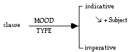
Fig. 3: System with associated realization statement
The arrow represents the relation of realization: the feature 'indicative' is realized by the presence of the function Subject, stated as +Subject. The different types of realization statement are summarized in the Appendix. The presence of Subject is one step in the specification of the function structure of an indicative clause, i.e. of the organization of the clause as a configuration of functions.
(ii) When we come to explore 'from around', we find that, through their entry conditions, a number of systems come together as an inter-related set, called a system network. We can illustrate again from the grammar of MOOD. The choice between 'indicative' and 'imperative' is the most general one in this area of the grammar; but each alternative leads to further choices. For instance, indicative clauses are either 'declarative' (they rode horses) or 'interrogative' (did they rode horses; who rode horses); declarative clauses are either 'untagged' (e.g., they rode horses) or 'tagged' (e.g., they rode horses, didn't they), and interrogative clauses are either of the wh- type (e.g., who rode horses?) or the yes/no type (e.g. did they ride horses?). See Figure 4.
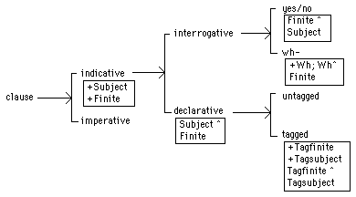
Fig. 4: Network of MOOD systems (realization statements in boxes)
In the diagram in Figure 4, the grammatical resources are represented as a network of inter-connected systems, each of which is a choice point. The systems in the network are ordered from left to right, starting with the most general option and moving towards more specific ones: if 'clause', then 'indicative' or 'imperative'; if 'indicative', then 'interrogative' or 'declarative'; if 'declarative', then 'tagged' or 'untagged'; if 'interrogative', then 'yes/no' or 'wh-'. This is the scale of delicacy (degree of detail, specificity, granularity).
In the example in Figure 4, each entry condition is a simple feature, 'clause'; but entry conditions can also be complexes of features, involving conjunction and/or disjunction. Such features likewise are always terms in other systems. Let us illustrate disjunction in an entry condition. Consider again the MOOD grammar of Figure 4. It has one system, MOOD TAG, whose entry condition is 'declarative'. However, this system is actually not restricted to declarative clauses; it is also open to imperative ones (e.g., [you] saddle the horses, will you; let's saddle the horses, shall we). Consequently, we need to be able to state "if either 'declarative' or 'imperative', then 'tagged'/'untagged'". That is, we need a disjunctive entry condition: see Figure 5.
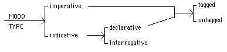
Fig. 5: Disjunctive entry condition
The same systemic feature or complex of features may occur as the entry condition to more than one system in the system network. In this case, the systems are simultaneous. For example, the primary MOOD system (MOOD TYPE) is simultaneous with the system POLARITY, the choice between 'positive' and 'negative' clauses: see Figure 6.
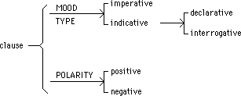
Fig. 6: Simultaneous systems
Two simultaneous strands in a system network define a two-dimensional paradigm. It is often useful to present examples in the form of a matrix table, with one system represented by the columns and another by the rows. Thus MOOD TYPE and POLARITY intersect as follows:
| MOOD TYPE: | |||
| indicative | imperative | ||
| POLARITY: | positive | The spy came in from the cold. | Come in from the cold! |
| negative | The spy didn't come in from the cold. | Don't come in from the cold! | |
Such matrices can be used in probing the accuracy of a complex system network: if it is not possible to find examples for one or more of the cells of a matrix, this means that the system network predicts a combination of systemic terms that does not exist.
Let us summarize what we have shown about the concepts of system and structure, and the relation between them. These concepts theorize the axes of organization in language, the paradigmatic and syntagmatic. The systemic, paradigmatic, axis is primary in the particular sense that it defines the overall organization of the grammar of a language; and the structural, syntagmatic, axis is secondary in the particular sense that it is specified locally in the environment of the various terms of the systemic axis. Figure 7 shows the intersection of the two axes in the grammar of MOOD, with the systemic axis providing the overall organization. This bifurcation into the paradigmatic axis and the syntagmatic axis makes it possible for the system to relate both to what is above and to what is below, in other words, both to what the system realizes and to what it is realized by.
(iii) Looking at the system from above, we are asking what it means: in other words, what semantic features are being realized by this particular set of options in the grammar. As already noted, in the case of MOOD the meaning has to do with the negotiation of speech-functional roles in dialogue: with basic categories such as statement and question (exchange of information), command and offer (exchange of goods-&-services), and the complex network of variable and more delicate categories of verbal interaction. We shall not pursue the semantic analysis here; but we may note that the resources and methods for representing semantic categories are formally identical with those used in the lexicogrammar.
1.3 Example: MOOD
The grammar of a language is a very rich and complex system; the grammatics must bring out that richness and complexity, and not obscure it. This means recognizing the different vectors along which the complexity is ordered, and exploring one step at a time.
Here we have introduced only one 'corner' of the grammar, and only in the most general terms: the primary systems of MOOD, as these are found in English. Because grammar is viewed as a resource rather than as a set of rules, it is interpreted in systemic-functional theory as a system network; this represents the grammatical potential available to the language user. The system network allows us to map out the overall organization of the grammar of a language, with delicacy as the main principle for ordering the various systems relative to one another. Naturally such networks soon get very large; in the systemic grammars of English stored in computers, there are somewhere around 1000 systems. We have illustrated such a map of the grammar of English with fragments from the MOOD grammar, as in Figures 4 and 5.
The partial English MOOD grammar we have presented is a systemic-functional description of one particular language, cast in the theoretical terms of systemic organization with associated structural realizations. That is, while the type of organization embodied in the system network is part of the theory, and is a general feature common to all languages, the particular systemic features and structural realizations are part of our descriptive interpretation of English. They are not part of the general systemic-functional theory of grammar (see further Section 3.3 below).

Fig. 7: The systemic (paradigmatic) and structural (syntagmatic) axes intersecting
As a descriptive generalization about interpersonal grammar, we can assume that all languages have a system of MOOD: i.e. grammatical resources for the interaction between speaker and addressee, expressing speech functional selections in dialogue. Further, the semantic categories of giving information (statement), demanding information (question), and demanding services or goods (commands) are very likely enacted in the grammars of all languages. However, the organization of the MOOD system, and the realizations of the various options, differ from one language to another. For instance, the degree to which there is a distinct grammatical category corresponding to commands is variable: there may or may not be a distinct form of the imperative, and even where there is, there are usually many other possible realizations. Similarly, while all languages probably have a basic opposition between statements and yes-no questions (polarity questions), which it is often (though not universally) possible to express by means of the distinction between falling and rising intonation, questions demanding a specific element of information (other than the value of the polarity) may be grouped systemically either with statements or with yes-no questions. It is easy to see why: they are like statements in that their polarity is certain, but at the same time they are like yes-no questions in that they demand information. Different languages organize their MOOD grammars around different generalizations in this way. Furthermore, languages differ considerably with respect to more delicate options, such as those concerned with how interactants position one another in dialogue (e.g. by indicating expected responses) and with how they assess the information being exchanged (e.g. by indicating degree of probability or source of evidence).
At the least delicate end of the grammar, Chinese, English, and Japanese have similar MOOD systems. All three distinguish 'indicative' vs. 'imperative' clauses, and within the former, 'declarative' vs. 'interrogative', with one interrogative subtype for querying elements and another for querying polarity. Examples are tabulated below:
| CHINESE | ENGLISH | JAPANESE | |||
| indic. | decl. | Tailang shang xue qu | Taro is going to school | Taroo wa gakkoo e ikimasu | |
| interrg. | elemental | Tailang dao nali qu? | Where is Taro going? | Taroo wa doko e ikimasu ka? | |
| polar | Tailang shang xue qu ma? | Is Taro going to school? | Taroo wa gakkoo e ikimasu ka? | ||
| imper. | Shang xue qu! | Go to school! | Gakkoo e ike! |
But while the three MOOD systems are congruent up to the point in delicacy shown in the table above, they also differ from one another in more delicate terms. For instance, in (Mandarin) Chinese, 'polar' interrogatives are further differentiated according to the speaker's expectation regarding the polarity of the proposition: they are biased (positive or negative) or unbiased; e.g. 'Do you want it?', positive bias Ni yao ma?, negative bias Ni buyao ma?, unbiased Ni yao buyao?. English has only the biased forms: positive (semantically neutral) did you see him?; negative (semantically, positive bias) didn't you see him? English has no unbiased form, other than the highly marked (peremptory) did you see him or not?
The basic MOOD system we have discussed is concerned with (i) the nature of the commodity being exchanged (information vs. goods-&-services) and (ii) the orientation of the exchange (giving vs. demanding). But there are other aspects of the exchange that may be grammaticalized in this part of the grammar, in particular aspects of the tenor of the relationship between the interactants engaging in the exchange, i.e. between speaker and addressee. In Japanese, this area is perhaps more highly codified in the grammar than in either Chinese or English. For instance, alongside the "plain" imperative (as in Hanase! 'Talk!), there are also polite options for situations where the speaker is superior to the addressee (as in Hanashi-nasai!) or inferior to the addressee (as in Hanashite-kudasai!). The elaboration of the grammar of Japanese in the areas of politeness and honorification is well-known. It is an important characteristic of the grammatical system, one that makes very good sense in terms of the interpersonal metafunction. At the same time, we have to recognize that the grammars of both Chinese and English also have created considerable potentials for enacting a wide range of subtly different tenor relationships. These potentials are perhaps not immediately obvious because they rely to a large extent on a cryptic feature of the system, viz. grammatical metaphor. Thus alongside the congruent Come in from the cold!, there are also various metaphorical variants where the command is realized not as an imperative clause but as if it was a statement or a question. For example: I'd like you to come in from the cold; I want you to come in from the cold; you should/must/will come in from the cold; Would/Could you come in from the cold. Such expansions of the system are of course characteristic of Japanese as well.
What generalizations can be made about the realization of systemic options in mood? MOOD options are typically realized in various ways, including intonation (direction of pitch movement), mood particles, relative sequence of elements (usually involving a finite verb), and special verbal categories. It seems that interpersonal systems in general tend to be realized by some prosodic mode of expression; and the realizations of MOOD that we find across languages can often be shown to be prosodic (e.g., interpersonal mood particles that serve as juncture prosodies). These particulars are not, of course, part of the general theory of grammar, they are empirical descriptive generalizations covering a number of different languages. And here Chinese, English, and Japanese illustrate nicely a general principle of crosslinguistic similarity. While their basic mood systems are congruent with one another, their systemic contrasts are created in different ways, deploying somewhat different subsets of the realizational resources. The basic patterns are tabulated below (leaving out realization by intonation, which is used by all three languages):
| MOOD TYPE | imperative | indicative | ||
| English | + Mood (Subject, Finite) | |||
| Chinese | ||||
| Japanese | (Predicator: "imperative" verb-form) | |||
| INDIC. TYPE | declarative | interrogative | ||
| English | Subject^Finite | |||
| Chinese | ||||
| Japanese | + Negotiation = ka^# | |||
| INT. TYPE | polar | elemental | ||
| English | Finite^Subject | + Wh; #^Wh^Finite | ||
| Chinese | + Negotiation = ma^#
OR: + Predicator2: negative; Predicator^Pred.2 |
+ "Wh" | ||
| Japanese | + "Wh" | |||
As the realizational table indicates, English differs from Chinese and Japanese in its mood structure. It has a Mood element, which consists of Subject + Finite. This Mood element plays a central role in the realization of mood options, in terms of both its presence and its internal organization. In the unmarked cases tabulated above, it is present in 'indicative' clauses (e.g. Mood: You will/Will you + come in from the cold), but not in 'imperative' ones (e.g. Come in from the cold). Further, 'declarative' clauses are distinguished from 'polar' ones by the relative ordering of Subject + Finite, Subject ^ Finite (will you) and Finite ^ Subject (you will), respectively. The significance of the Mood element in English is also shown e.g. in tags, where the Mood element is picked up at the end of the clause as the Moodtag, consisting of Tagfinite ^ Tagsubject (e.g. You will come in from the cold, won't you?) Neither Chinese nor Japanese has a distinct Mood element. It follows that they do not rely on the sequence of Subject + Finite in realizing mood options. In fact, neither language has a separate function Finite in the mood structure of the clause. Chinese has no system of verbal finiteness at all, and Japanese does not separate out finiteness from the rest of the verbal group in its clausal structure as English does. Instead, both languages deploy mood particles at the end of the clause serving the function we have called Negotiation, since it determines the clause's negotiatory value in dialogic interaction. The difference is that Japanese Negotiation = ka is a property of 'interrogative' clauses in general, whereas Chinese Negotiation = ma is a property of 'polar' interrogatives in particular. (Chinese also has another type of 'polar' interrogative, where the Predicator is repeated with a negator as in shi bu shi. We referred to it above when we discussed differences in more delicate mood systems.) In fact, these mood particles are part of more extensive sets of interpersonal particles in both languages, including ne, ba in Chinese and ne, yo in Japanese; the closest equivalent of the English option of tagging a clause is a particle of this kind. The generalization is that the grammars of Chinese and Japanese provide the resource for indicating how the speaker intends the addressee to take his/her move in the dialogue as s/he is about to 'hand over' to the addressee. (Such interpersonal particles are common around the languages of the world; for example, we find them clause-initially in Arabic (hael, a) and in French (est-ce que), and we find them in various (South-)East Asian languages, e.g. in Korean, Thai (clause final má, rii; na etc.), Vietnamese (clause final phong, a, u, chu, di etc.). Such particles may also realize options in interpersonal systems having to do with tenor, such as the sex of speaker and addressee and the status and power relations between them.)
The function Subject is not referred to in the table above in the realization statements of Chinese and Japanese. Does this mean that these languages do not have a Subject; or that their Subjects derive from different metafunctions? Asking these questions is in fact not the best way of exploring the grammars of Chinese and Japanese. The category of Subject was posited in the description of English and other languages; and in English its interpersonal nature is very clear once you begin to study dialogue. However, this does not mean that we should go looking for Subject in Chinese, Japanese or any other language we interpret systemic-functionally. Rather, we should ask more abstract questions that are less likely to prejudge the answer. Thus we ask how the clause in Chinese or Japanese is organized as an interactive move in a dialogue, as an exchange between speaker and addressee; and we can go on to ask whether there are elements in the clause that are given some special status in this interaction, as when an element is given the status of being the point of information demanded from the addressee in an 'elemental interrogative' clause. In English, the Subject is such an element: it is the element given the status of modal responsibility; that is, it is responsible for the success of the clause as an interactive move. This is perhaps easier to see in 'imperative' clauses than in 'indicative' ones; but it applies to both types. In an 'imperative', modal responsibility means responsibility for complying with or refusing to comply with the command, as in: Behave yourself!, Be polite!; Don't be fooled by his pleasant demeanour!; Be guided by your parents! I will/I won't. As these examples indicate, modal responsibility is quite distinct from actorhood; it can even be assigned to an element in a passive clause. It is also in the environment of an 'imperative' clause that we are perhaps most likely to find a similar type of status in Chinese and Japanese (and in other languages as well): they both give one element in the clause the special interpersonal status of responsibility for complying with the command in an 'imperative' clause. The question is then whether there is an indicative variant of this status of modal responsibility assigned to a clausal element in dialogue, or some other status of special interpersonal significance. Since this would require a lengthy exploration, we leave the issue open.
2. Expanding the (dimensions of) lexicogrammatical space
Figure 8 locates the MOOD 'corner' of the grammar in relation to the other most general systems, according to the two dimensions of metafunction and rank. Metafunction refers to the different modes of meaning construed by the grammar; rank refers to the different 'sizes' of the grammatical units (layers of constituency). We shall discuss each of these concepts in turn (Sections 2.1 and 2.2), followed by a short account of the third dimension, that of delicacy (Section 2.3).
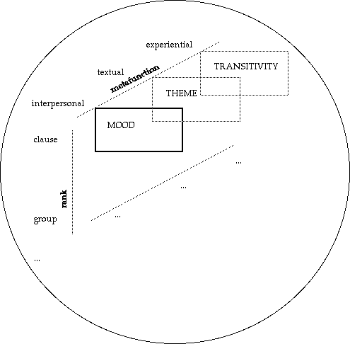
Fig. 8: The view of the grammar so far, relative to expansion by metafunction and rank
2.1 (1) By metafunction: from MOOD to TRANSITIVITY & THEME
We begin our move from the MOOD corner of the system located at the intersections of 'clause' rank and 'interpersonal' metafunction by moving along the dimension of metafunction.
2.1.1 The three metafunctions
Let us introduce these metafunctions in two steps. The grammar creates meaning within two highly generalized metafunctions that relate to phenomena outside language: (i) interpersonal and (ii) ideational.
(i) The interpersonal metafunction is concerned with the interaction between speaker and addressee(s)—the grammatical resources for enacting social roles in general, and speech roles in particular, in dialogic interaction; i.e. for establishing, changing, and maintaining interpersonal relations. One of its major grammatical systems is MOOD, the grammaticalization of speech function that we have already met.
(ii) The ideational metafunction is concerned with 'ideation'—the grammatical resources for construing our experience of the world around us and inside us. One of its major grammatical systems is TRANSITIVITY, the resource for construing our experience the flux of 'goings-on', as structural configurations; each consisting of a process, the participants involved in the process, and circumstances attendant on it. For example: [Location:] in the open glade [Actor:] the wild rabbits [Process:] danced [Accompaniment:] with their shadows.
These two metafunctions orient towards two 'extra-linguistic' phenomena, the social world and the natural world; we construe the natural world in the ideational mode and to enact the social world in the interpersonal mode. For instance, we can construe a picture of what can participate in an action (ideational) and we can enact who gives orders to whom (interpersonal). In addition, there is a third metafunction, intrinsic to language (that is, orienting towards the phenomena created by language itself, viz. meanings), the textual metafunction.
(iii) The textual metafunction is concerned with the creation of text, with the presentation of ideational and interpersonal meanings as information that can be shared by speaker and listener in text unfolding in context. One of the major textual systems is THEME, the resource for setting up a local context for a clause by selecting a local point of departure in the flow of information (or perhaps rather 'swell of information', since it is not a uniform flow). Thus the spatial Location is given thematic status in the example analysed for TRANSITIVITY above: [Theme:] in the open glade [Rheme:] the wild rabbits danced with their shadows.
The role of the textual metafunction is an enabling one. It serves to enable the presentation of ideational and interpersonal meaning as information that can be shared: it provides the speaker with strategies for guiding the listener in his/her interpretation of the text.
As Figure 8 suggests, the three metafunctions are simultaneous; this simultaneity applies to both axes of organization, the systemic and the structural.
(i) Systemically, this means that MOOD (interpersonal), TRANSITIVITY (ideational), and THEME (textual) are simultaneous strands within the system network of the clause: see Figure 9. That is, the metafunctions are manifested as clusterings in the overall system network of the clause (and other grammatical units). The figure shows a fragment of the English network; similar simultaneous strands are found in Chinese and Japanese, although, as we shall see below, MOOD and THEME relate in somewhat different ways in the three languages, and the operation of the system of VOICE in mapping structural functions from the different metafunctions onto one another is also varied. Around the languages of the world, we can expect considerable variation in these systems which relate the different metafunctions to one another. There are languages which have no equivalent of the VOICE system we find in e.g. Chinese, English, and Japanese; and where languages have both VOICE and THEME, we find variation in the division of labour between them, in particular in how the choice of an unmarked thematic status is achieved. Further, systems deriving from the different metafunctions may also be distributed along the rank scale (constituency hierarchy; see below) in different ways, particularly across the ranks of clause, verbal group and verb.
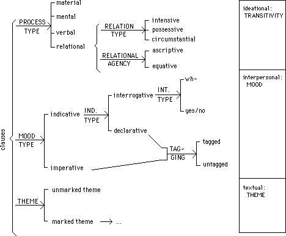
Fig. 9: Metafunctions as manifested in the system network of the clause (English)
(ii) Structurally, the metafunctional simultaneity is manifested as three simultaneous strands or layers in the structure of the clause: see Figure 10, which shows the three metafunctional perspectives on our earlier example. The structural functions from the different metafunctional strands are conflated with one another; for example, Subject is conflated with Actor (represented as Subject/Actor; see the Appendix). The example of structural simultaneity is from English. Structures are also metafunctionally layered in this way in Chinese and Japanese, but the organization within each strand may be different from what we find in English. We referred above to the differences in the interpersonal layer, which is probably where the main structural differences lie. Figure 11 presents an example from Japanese of an 'elemental interrogative' clause. There is no Mood element and we have not posited a Subject function, but the clause ends with the Negotiation function where its negotiatory or interactional contribution is realized. Negotiation is preceded by Predicator, the interpersonal perspective on the verbal group serving in the clause: the Predicator carries assessments of mood and polarity; and it also carries degrees of 'politeness' and 'formality' (such as the difference between desu and the plain form da). The Wh element is in the position it would have in an unmarked declarative clause; Wh and Theme are not conflated 'by default', as they are in English. Chinese is like Japanese in this respect. The two are also similar in that functions that are recoverable from the text or the context for the addressee may be left implicit; for example, a Theme that is continuous with preceding Themes is likely to be left implicit. This also means, of course, that any structural functions from the other metafunctional layers which are conflated with it are also left implicit.
Around the languages of the world, we can expect to find considerably more variation in the way the three metafunctional contributions to structure are mapped onto one another. The main variable here is most probably rank. Languages differ in the way that the realizational domains of THEME, MOOD, TRANSITIVITY, and related systems are distributed across ranks. For example, many languages do much more work in the verb or verbal group than languages such as Chinese and English.
| metafunction: | system: | in the open glade | the wild rabbits | danced | with their shadows. | |
| textual | THEME | Theme | Rheme | |||
| interpersonal | MOOD | Adjunct | Subject | Finite | Predicator | Adjunct |
| Residue 1 | Mood | Residue 2 | ||||
| ideational | TRANSITIVITY | Location | Actor | Process | Accompaniment | |
| metafunction: | system: | Kore wa | nan | desu | ka |
| textual | THEME | Theme | |||
| interpersonal | MOOD | "Wh" | Predicator | Negotiation | |
| ideational | TRANSITIVITY | Carrier | Attribute | Process |
2.1.2 Ideational (at clause rank): TRANSITIVITY
The ideational metafunction engenders resources for construing our experience of the world around us and inside us; the ideational system at clause rank is TRANSITIVITY. TRANSITIVITY is concerned with construing one particular domain of our experience, our experience the flux of 'goings-on', as configurations of a process (of some general type: material, mental, relational), the participants involved in it (Actor, Goal; Senser, Phenomenon; Carrier, Attribute; and so on), and the circumstances attendant on it (Cause, Location, Manner (including means and instrument), Accompaniment, and so on).
There are two types of variable in systems of transitivity:
(i) The type of process.
(ii) The type of participation in process.
(i) The type of process is represented in the system network in Figure 9. The transitivity system of a language will construe experience into a small set of domains of meaning which differ according to the process itself and the nature of the participants involved in it.
In English, the primary options in PROCESS TYPE are 'material/mental/verbal/relational': for a more detailed account of the transitivity system, see Figure 12. This system is motivated by criteria (i) 'from above', (ii) 'from below', and (iii) 'from around'. Some of these criteria are set out and illustrated in the following table:
| PROCESS TYPE | (i) From above | (ii) From below structural realization |
(iii) From around | ||||
| category meaning | Projection | Tense | |||||
| material | doing & happening | Actor | Process | Goal | Recipient | ||
| the company | is giving | a new teapot | to my aunt | present-in-present | |||
| mental | sensing | Senser: conscious | Process | Phenomenon | |||
| my aunt | wants | a new teapot | +projection | present | |||
| my aunt | wants | them to buy a new teapot | |||||
| verbal | saying | Sayer: symbol source | Process | Verbiage | Receiver | ||
| the company's letter | says | kind things | to my aunt | +projection | present | ||
| the company's letter | says | to my aunt | that she is entitled to a new teapot | ||||
| relational | being & having | Carrier | Process | Attribute | |||
| this teapot | is | beautiful | present | ||||
| Identified | Process | Identified | |||||
| this | is | the teapot the company gave my aunt | present | ||||
These are different clause types; a number of verbs can serve in more than one type, in different senses. For example, the verb make can serve in a material clause in the sense of 'produce' and in a relational clause in the sense of 'be' (or 'cause to be'). Thus it made a good drink is ambiguous between material 'it (e.g. the appliance) produced a good drink' and relational 'it (e.g. the mixture) was a good drink'. Such ambiguous instances can always be probed 'from above', 'from below' and 'from around'. Let us take 'material' and 'mental' in the system of PROCESS TYPE as illustrations of the three perspectives that motivate this system.
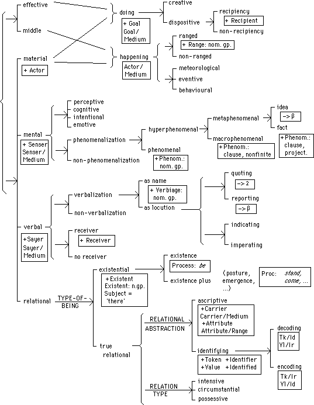
(1) PROCESS TYPE: 'material'. (i) Looked at 'from above', a material clause construes doings & happenings, including actions, activities, and events; configurations of a process and participants involved that require some input of energy to occur and where one participants is likely to undergo a change. (ii) Looked at 'from below', a material clause is characterized by particular structural configurations, such as Process + Actor + Goal (+ Recipient), and Process + Range. There is always an Actor, which can be realized by a nominal group representing any 'thing' or even a non-finite clause representing a 'macro-thing' (as in the boy with green hair broke the window, and the earth moving broke the window respectively), but not by a 'meta-thing' (a fact, that the earth moved broke the window is not possible). Further options determine whether the process is 'directed', in which case there is a Goal as well ([Actor:] the policeman [Process:] hunted [Goal:] the demonstrator), or not ([Actor:] the policeman [Process:] ran). If the process is directed, it may be 'benefactive'; and it if is, there may be a Recipient ([Actor:] the judge [Process:] gave [Recipient:] the demonstrator [Goal:] a legal document). (iii) Looked at 'from around', a material clause is the entry condition to a number of further systems; we have already referred to directedness and benefaction as two examples. It does not lead to a system of PROJECTION (a system with an option of reporting or quoting speech or thought, which we find with verbal and mental clauses, as in The paper said "The building collapsed"); it is thus not possible to say the earth moved: "The building collapsed": there can be a causal relation between these two clauses (the earth moved so the building collapsed), but not a semiotic one where the clause the earth moved would project the clause "The building collapsed" onto a more abstract plane as its content. If we explore around PROCESS TYPE but outside the TRANSITIVITY systems themselves, we find that in reports of present time, there is an unmarked correlation with different TENSE selections for the different process types. In material clauses, the unmarked tense is the present-in-present rather than the simple present, as in The cat's waving its tail rather than The cat waves its tail. (The simple present is used to construe a different time frame, such as generic or habitual time, as in The cat waves its tail whenever it's uncertain.) This systemic association between PROCESS TYPE and TENSE is semantically motivated: processes are phenomena that unfold in time and hence have a tense system; but different process types have different temporal profiles and hence different unmarked present tense selections.
(2) PROCESS TYPE: 'mental'. (i) Looked at 'from above', a mental clause construes sensing, perception, cognition, intention, and emotion; configurations of a process of consciousness involving a participant endowed with consciousness and typically a participant entering into or created by that consciousness. (ii) Looked at 'from below', a mental clause is characterized by a particular structural configuration, Process + Senser + Phenomenon. There is always a Senser, which is realized by a nominal group denoting a being endowed with consciousness (e.g. she in she saw them crossing the road). It is thus much more constrained than the Actor; in fact, it is the most constrained of all the participants in any of the process types. In contrast, the Phenomenon can be not only any kind of thing or macro-thing, but also a meta-thing (as in she saw them, she saw them crossing the road, she saw [the evidence] that they had crossed the road). (iii) Looked at 'from around', a mental clause leads to a system of PROJECTION. A mental clause can project the content of consciousness, 'thought' or 'ideas', as another, separate clause (as in He thought > the moon was a balloon). Such a clause is not a participant within the mental clause; for example, it cannot serve as the Subject in a passive variant (we do not get That the moon was a balloon was thought by him). Further, unlike a material clause, a mental clause does not lead to a benefactive option (there is no He thought me > the moon was a balloon; examples such as He thought to himself > "The moon is a balloon" are not prototypical, but are 'mental as if verbal', inner speech). With respect to TENSE, the unmarked selection for present time is the simple present rather than the present-in-present (for example, He thinks the moon is a balloon rather than He is thinking that the moon is a balloon).
TRANSITIVITY, then, offers a network of inter-related options for representing different types of experience, our experience of the material world, of the world of our inner consciousness, of the world of symbolization, and so on. The criteria from above, from below, and from around which we have illustrated together motivate the PROCESS TYPE system in the grammar of transitivity. That is, in our description of this area of the grammar, these types yield the most powerful generalizations. But their differences in the overall system are not immediately obvious. There are no overt markers differentiating the process types; for example, there are no transitivity particles at the end of the clause realizing the selection in process type (as we illustrated for MOOD in Section 1.3 above), and there are no differences in verbal morphology. The process types are covert systemic types in the transitivity system, in many cases, cryptotypes in Whorf's terminology. We recognize that they are 'in the system' exploring them from the three perspectives we have illustrated. When we explore them in this way, we see how the overall system is 'affected' by their presence, how it 'reacts' to their presence. For example, we find that the TENSE system 'reacts' to the distinction between the material and non-material process types. Whorf called such properties reactances. We have exemplified some reactances to PROCESS TYPE such as TENSE and PROJECTION. Others include classes of verb that can serve as the Process in clauses of the different process types, and a set of reactances outside the ideational metafunction. For example, the textual metafunction includes the option of substitution whereby one piece of wording is substituted for by a particular substitute form (such as nominal one and verbal do in English) to present that information as continuous (in the environment of contrast, as in Which towel would you like? The red one, please). The verbal substitute do (to/with) can only be used in material clauses, not in mental, verbal or relational ones. Thus we can get 'material' What the company did with the teapot was give it to my aunt, but not 'mental' What my aunt did with the teapot was want it, 'verbal' What my aunt did with the story was tell it, and 'relational' What my aunt did with the director was be her. Reactants are often outside the metafunctional domain of the system they 'react to', and even when they fall within the same metafunction, they can be a considerable distance away from the system they 'react to'.
Chinese and Japanese seem to have the same primary PROCESS TYPE system as we have just illustrated in English. They differ in the kinds of reactance that provide evidence for the different process types. For example, the temporal issues are different for English and Chinese since English construes time in the process on a tense model whereas Chinese construes it on an aspect model. They also differ in more delicate process types. For example, both Chinese and Japanese bring possession and existence closer together than English does.
In Japanese, material, mental, verbal and relational clauses differ for example with respect to patterns of postpositional marking, options in voice and the resultative construction, and projection. There is always one participant marked by the postposition ga (or wa if it is thematic); and there may be one or two more participants marked by the postpositions o (or wa if it is thematic) or ni (or ni wa if it is thematic) or left without a postposition if the clause is an unmarked relational one. Thus in an active material clause the Actor is marked by ga, the Goal by o and the Beneficiary by ni:
| Sensei ga | watakushi ni | hon o | kudasaimashita |
| 'teacher' | 'I' | 'book' | 'give' |
| Actor | Beneficiary | Goal | Process |
| 'The teacher gave me a book' | |||
whereas the Attribute or Value of an unmarked relational clause is without a postposition:
| Watashi wa | sensei | desu |
| I | 'teacher' | 'be' |
| Carrier | Attribute | Process |
| 'I am a teacher' | ||
PROJECTION is an option for mental and verbal clauses. They can project a clause as the 'content' of the mental or verbal processing and the projected status of this clause is marked by to, ka or the like. For instance, the following example is a combination of two clauses, a projecting mental one of thinking and another one representing the idea projected by thinking:
| Watashi wa | basu de | ikoo | to | omou | |
| 'I' | 'bus' | 'go' | 'think' | ||
| α [mental] | Senser | Process | |||
| β [projected idea] | Manner-means | Process | |||
| Negotiation | |||||
| 'I think I will go by bus' | |||||
Verbal clauses are similar with respect to projection; but in addition, they can have a Receiver (marked by ni) representing the addressee of a move in dialogue.
Around the languages of the world, we can expect more variation in process type than is evident with Chinese, English or Japanese. It seems plausible that we will find prototypical material, mental, and relational process types in the transitivity systems of most languages, but there will be considerable variation in how they construe more intermediate categories (such as behavioural and existential) precisely because of their more indeterminate status. The central reason for recognizing verbal processes as a distinct type in e.g. Chinese, English and Japanese is their ability to project quoted or reported clauses. However, some languages such as Tagalog may use a relational strategy (cf. English his statement was that the moon is a balloon) while others may enact projection interpersonally as "mood projection" with a special quotative mood. And just as we find considerable variation in the realization of mood types across languages (as illustrated above), we will find considerable variation in the overt markers and covert reactances of process types. The criteria we tabulated above are thus specific to English (as we already noted with respect to unmarked present tense selection).
(ii) The second major variable is the mode of participation in the process—how participants affect one another through their involvement in a process. The interpretation in traditional grammar is in terms of of the concept of transitive derived mainly from material clauses. We have in fact already alluded to it: it is concerned with whether the Actor impacts another participant (the Goal) through the process, transitive, or not, intransitive. Since this model is oriented towards one type of clause, it leads to an interpretation in which process types are have to be differentiated. That is, while the material model operates with an Actor potentially impacting a Goal, once the description is broadened, other process types have to be recognized: these are mental, verbal, and relational (in e.g. Chinese, English, French, Japanese and Tagalog).
But there is an alternative to the type of model that was recognized in traditional grammar—the ergative model of transitivity. This represents a process not in terms of impact but in terms of causation. There is always (in all process types) one participant that is most closely associated with the process, the Medium (since it is the medium through which the process is manifested); and the basic option is whether to represent the combination of Medium + Process as being externally caused by an Agent or not. So the combination 'door + open', can be represented as (say) [Medium:] the door [Process:] opened, without specifying what brought the occurrence about, or as [Agent:] the wind [Process:] opened [Medium:] the door, with a specification of the Agent bringing about the occurrence. A clause with Process + Medium without the Agent is known as 'middle', and a clause with an Agent (explicit or implicit) is known as 'effective'.
These two transitivity models do not represent mutually exclusive sets of phenomena, but rather complementary perspectives on the same set of phenomena. In any given language, some areas will display more features of the transitive and others more features of the ergative. The balance between them is clearly a major point of variation in transitivity systems around the world. English is a typically mixed system. The ergative pattern, with the contrast between 'middle' and 'effective', is found with all the process types except for verbal processes, which are 'middle' only'; for example:
| PROCESS TYPE | AGENCY | |
| middle (Medium + Process) | effective (+ Agent) | |
| material | The door opened | The wind opened the door |
| mental | She liked the new musical | The new musical pleased her |
| verbal | She told them a story | |
| relational | He was mad | She made him mad |
| He was Henry | She called him Henry |
We can now see that the existence of pairs of mental clauses such as she liked the new musical : the new musical pleased her can be accounted for by reference to the system 'middle' vs. 'effective' of the ergative model. They manifest the same ergative pattern as we find in material and relational clauses. They differ in one respect. Both middle and effective mental clauses have the same set of participants, Senser + Phenomenon; and the difference lies in the assignment of ergative roles: in the effective the Phenomenon is construed as an Agent bringing about the Senser's sensing (emotion of pleasure in our example), whereas in the middle it is construed non-agentively. Middle and effective thus constitute two complementary perspectives on mental processes; they can be seen from two different angles, either as the Senser engaging in sensing which ranges over (or creates) a Phenomenon, or as the Phenomenon bringing about sensing which impinges on a Senser.
Around the languages of the world, the degree to which one of the two models of transitivity dominates may be different, and we can see this variation in the increasing foregrounding of the ergative model in the history of English. Chinese and English are very similar in the balance between the models in their transitivity systems; but Chinese does not have a systematic contrast between 'middle' and 'effective' mental clauses, these exist only in the middle type. Japanese and English also appear to be very similar in the balance of the transitive and the ergative.
There is variation across transitivity systems beyond what we have suggested so far. On the one hand, there may be yet other transitivity models. In his interpretation of the transitivity of Tagalog, Martin (to appear) identifies a transitive pattern where different process types are distinguished, and a complementary one which construes a clause nucleus consisting of the Process and one participant, the Medium, through which it is actualized. There may or may not be another participant; if there is, it is either drawn into the clause nucleus or repelled by it. The common theme seems to be that transitivity systems embody a complementarity between two perspectives on experience: one in which happenings are distinguished into different types, the other in which they are treated as all alike.
2.1.3 Textual (at clause rank): THEME
The textual metafunction engenders resources for presenting interpersonal and ideational meanings as information organized into text that can be ongoingly exchanged between speaker and listener. This involves transitions in the development of text (conjunctive relations) and the assignment of different textual statuses (thematicity, newsworthiness, continuity and contrast, recoverability). These transitions and statuses enable the exchange of information; the speaker is guiding the listener in interpreting the unfolding text. At clause rank the major textual system is THEME.
THEME is a resource for organizing the interpersonal and ideational meanings of each clause in the form of a message. Each clause will occur at some particular point in the unfolding of the text; this is its textual environment. The system of THEME sets up a local environment, providing a point of departure by reference to which the listener interprets the message. With this system the speaker specifies the place in the listener's network of meanings where the message is to be incorporated as relevant. The local environment, serving as point of departure, is the Theme; what is presented in this local environment is the Rheme. The clause as a message is thus a configuration of two thematic statuses, Theme + Rheme.
In English, thematic status is expressed by position in sequence. Theme is realized by initial position and Rheme is realized by non-initial position: e.g. [Theme:] In 1791 [Rheme:] John Macarthur arrived in Sydney. There are a number of thematic options, including (i) the choice between 'marked theme' (as in the example above) and 'unmarked theme' (the Subject in a declarative clause: [Theme:] John Macarthur [Rheme:] arrived in Sydney in 1791.); (ii) the option of theme predication (e.g., It was John Macarthur who arrived in Sydney in 1791), typically to identify a particular theme out of a(n implicit) set of potential candidates; and (iii) the option of theme identification, foregrounding some part of the message by means of nominalization (e.g., what John Macarthur did in 1791 was arrive in Sydney). Since THEME is a textual resource, it relates the clause to the overall development of text in context in particular: here the text in question was being developed as a chronological sequence.
We have just presented the organization of the textual organization of the clause as a configuration of two discrete constituents, Theme ^ Rheme. This makes it possible to show how they map onto functional elements within the other metafunctional strands of the clause. However, all textual statuses are really degrees of prominence; what we have here is a cline, a gradual move from thematic prominence to non-prominence. We can thus construe the clause as a 'wave' in the flow of information, starting with a thematic peak and moving into a thematic trough. Such wave-like or periodic organization is the mode of expression engendered by the textual metafunction: see further Section 3.1 (ii) below.
Thematicity is one of a set of textual statuses or kinds of prominence. The clause also displays a complementary kind of prominence, degree of newsworthiness. This is a cline from given information to new information, represented as a configuration of Given + New. Prominence as news is realized by intonational prominence: while the movement of pitch in a tone group (intonation unit) is a continuous contour, there will be some major movement, e.g. a major rise or a major fall; and this major movement is prominent against the background of the movement overall.
Clause and tone group are not necessarily co-extensive; one clause may be realized by more than one tone group, and one tone group may realize more than one clause. This in fact reveals the existence of another grammatical unit alongside the clause, the information unit. This unit is realized by the tone group; and it is the domain of the system of INFORMATION FOCUS, realized by Given + New. In the unmarked case, a clause is co-extensive with an information unit, so that Theme + Rheme and Given + New complement one another within the domain of a single clause. While Theme is realized sequentially, New is not; it is realized intonationally. Consequently, thematicity and newsworthiness are independent variables. In the unmarked case, the New is mapped onto the last element within the Rheme that has a lexical content. Consequently, the unmarked message is a combination of two textual waves: Theme shading into Rheme and Given shading into New, with Theme falling within Given and New falling within Rheme. See Figure 13 for an example (assuming a moment in the information flow corresponding to 'where did John Macarthur go in 1791?').
| In 1791 | John Macarthur arrived | in Sydney | |
| THEME | Theme | Rheme | |
| INFORMATION FOCUS | Given | > <---- | New |
In the unmarked case, the clause thus unfolds from prominence as Theme to prominence as New. From the listener's point of view, s/he is thus given guidance as to where to integrate the message with his/her interpretation of the text so far and what to zoom in on as the main point. This swell of information within the clause also tends to correlate with a move within the elements of the clause from elements whose referents are presented as specific and so recoverable to the listener to elements presented as non-specific and so non-recoverable to the listener. But, in English, choices in REFERENCE vary independently of thematicity and newsworthiness, so the pattern just described is only a tendency.
The distribution of information in the clause we have just discussed also helps explain the textual aspect of VOICE, 'active/passive', in English. From a textual point of view, this system provides alternative options for participants as unmarked Theme and unmarked New. Thus for example in an 'effective' clause (see Figure 12 above), the active version will have Agent/Subject as unmarked Theme and Medium as a candidate for unmarked New, whereas the passive version will have Medium/Subject as unmarked Theme and Agent (if present) as a candidate for unmarked New. Thus VOICE has to be understood in relation to the textual metafunction.
All languages will have textual resources for organizing the presentation the clause as a message, assigning different textual statuses to different parts of the clause. When we explore the clause from a textual point of view, we have to study it as a message in the unfolding text, a message that is adjusted to, and which helps create, the 'flow of information' in the text. Because this view has only rarely been taken in reference grammars, there is lack of information on textual systems. No doubt a good deal of insight into various languages is lost through claims that they are "free word order" languages since textual options are often realized by sequence (as we indicated for English above) and through absence of accounts of intonation systems. But textual statuses can also be indicated by other means such as adpositions (e.g. the preposition ang in Tagalog and the postposition wa in Japanese).
There is variation in how textual systems relate to clausal systems from the other metafunctions. On the one hand, languages differ in how they relate the textual metafunction to the interpersonal one. As we have indicated, unmarked Theme in English is determined by the mood type (declarative: Subject, wh-interrogative: the Wh-element, yes-no interrogative: Finite ^ Subject, and imperative: Predicator); but many languages do not orient THEME to MOOD in this way: this is true of Chinese, Japanese and Tagalog. On the other hand, languages differ in how they relate the textual metafunction to the ideational one. As we have indicated, English has a system of VOICE for giving participants different textual potentials. Many other languages have a similar system, but they may take up the passive option less frequently than English does or restrict the system of voice more in relation to transitivity. But a language may also achieve the mapping between textual systems and transitivity roles without a separate voice system. For instance, Tagalog has a general system for selecting different participants and circumstances as Theme; but there is no separate system of voice. In English, Theme generalizes across the interpersonal and ideational metafunctions and it may also contain contributions from within the textual metafunction itself, conjunctive and continuative parts of the Theme. Other languages may separate out ideational Themes (i.e. thematic participants and circumstances), giving them a clearly distinct status, as in Tagalog (where ideational Themes are marked by ang ) and Japanese (where ideational Themes are marked by wa).
There is also variation in the division of labour among different textual systems. We suggested that there is a tendency in English for Themes also to be given and specific. This tendency may be stronger in a language where here is no obligatory marking of specificity within nominal groups, as in Chinese. In such languages there may be a closer relationship between 'participant tracking' in discourse and textual systems within the clause than there is in English.
2.1.4 Ideational: logical (at clause rank): COMPLEXING
The metafunctional components of the grammar discussed in 2.1.1 to 2.1.3 have one significant feature in common: their structural reflexes are in the broadest sense configurational. That is to say, the structural realization of selections in the systems of transitivity, of mood, and of theme is some organic configuration of distinct functions, like Actor + Process + Goal, or (Subject + Finite) + (Predicator + Adjunct). We have pointed out that these are not always clearly defined, or bounded, as segmental constituents; the critical characteristic that they share is that of organic solidarity, each part fulfils a distinctive function with respect to the whole.
There is one further component in the grammar, one whose structural reflex is of a different order: this is what we refer to as the logical metafunction. There are in every language systems of logical relations: relations such as 'and' and 'or' and 'if ... then' and 'because ... so', which construe the links between one piece of the discourse and another. These systems are realized not by configuration but by iteration: one clause bonded with another clause, or one group or phrase with another group or phrase. The characteristic feature of these relationships is that they do not create closure; each element (each clause, each group, and so on) can always be followed by another one of the same. We refer to these structures as complexes: clause complexes, group complexes, and so on. Each bond in such a complex is called a nexus.
Here, as elsewhere in this chapter, we shall direct our attention to the clause, which means, in the present section, to the clause complex. The general form of systems of this "complexing" kind, known as recursive systems, is shown in Figure 14; a set of options x/y/... is combined with a simultaneous choice of 'stop' or 'go round again'. As far as the clause complex is concerned, the former is itself a combination of two simultaneous systems: (1) interdependency and (2) logical-semantic relation.
The system of interdependency specifies the relative status of the two clauses in a nexus. (A prototypical nexus consists of just two elements; we shall assume this for purposes of discussion.) The two may have equal status, neither being dependent on the other (hence each in principle independent); this relationship is paratactic. Or, one may dependent on the other, where the relationship is hypotactic. In our notation, parataxis is shown by Arabic numerals, hypotaxis by letters of the Greek alphabet.
The system of logical-semantic relations specifies what its name suggests: the particular kind of logical interconnection. It is important to stress that "logical" here refers to the logic of natural languages, a common-sense logic characterized by flexibility and "fuzz". This is, of course, the ultimate source of logic in its formal and symbolic sense; but since such systems of logic are derived from natural language, not the other way round, it is not very profitable to try and interpret natural-language logic as an imperfect copy of a logic that has been designed. The basic distinction in the English system, in the logical-semantic relations of the clause complex, is between the two types expansion and projection.
In a nexus related by expansion, the secondary clause picks up the message of the primary one and expands on it. It may do this in any one of three ways: by elaborating, by extending, or by enhancing. Elaborating means saying the same thing over again, either by direct repetition (the limiting case!) or, more "elaborately", by rewording it, clarifying it, or giving an example. This is the relationship that is signalled by expressions such as in other words, that is to say, for instance; or by abbreviations such as i.e., e.g. and viz. Extending means adding something, varying, replacing or taking away, expressed by and, or, instead, except, and alsobut in its adversative sense. Enhancing means giving some further information that is related in a systematic way by a semantic feature of (typically) time, cause, condition, or concession: here we find conjunctions such as (and) then, (and) so, in that case, otherwise, nevertheless, and but in its concessive sense. All of these may be combined with both types of interdependency, parataxis and hypotaxis. We have illustrated so far with paratactic conjunctions; but enhancing relations, in particular, are often construed hypotactically, with conjunctions such as when, because, if, unless, although.
In a nexus related by projection, the secondary clause is instated by the primary clause as what somebody said (locution) or thought (idea). This relationship is the "direct and indirect speech and thought" of our traditional grammars. Here also the interdependency may be paratactic ("direct") or hypotactic ("indirect"); in other words, projection, like expansion, may combine with either of the two relationships in status.
An example of a clause complex is given in Figure 14. The system network, showing just these first steps in delicacy, is shown in Figure 15.
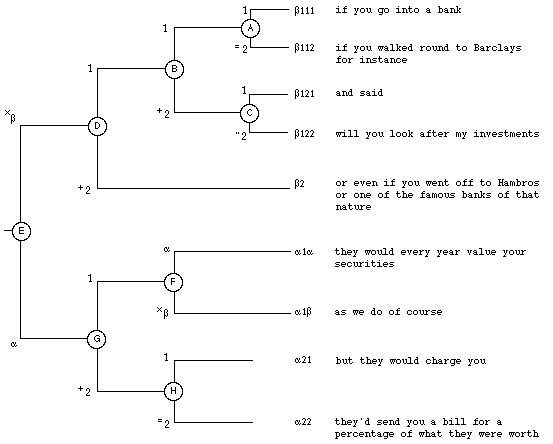
Fig. 14: Analysis of clause complex from casual conversation (Svartvik & Quirk, 1980)
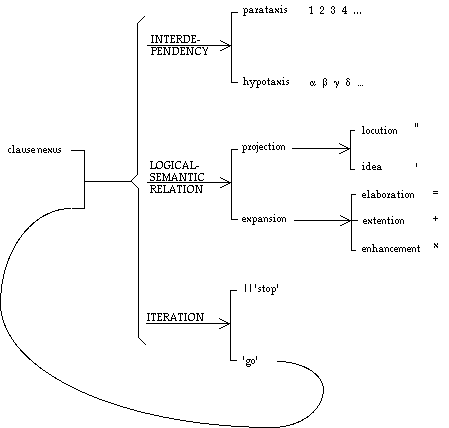
Fig. 15: System network for the clause complex (excluding more delicate options)
2.2 (2) By rank: from clause to phrase and group
Constituency is built on the part-whole relation; it presupposes a whole of which we identify constituent parts. Wholes which display an organic constituency structure are called grammatical units. Units have yntagmatic integrity: they are fully accounted for by their structures, and they are not structurally mixed with other units.
Grammatical units are identifiable in functional terms. This means that (i) they are the points of origin of system networks (such as those of transitivity and mood in the clause) and (ii) they function as constituents in their entirety. We can arrive at functionally determined units if we adopt a rank-based type of constituency.
Rank orders units into a hierarchy according to their constituency relation: the highest-ranking units consist of units of the rank immediately below, these units consist of units at the next rank below, and so on, until we arrive at the units of the lowest rank, which have no internal constituent structure. Rank is thus a theory of the global distribution of the units of the grammar. The English grammatical rank scale is
clause
group/phrase
word
morpheme
That is, a clause consists of groups, a group of words, and a word of morphemes. (For more on the phrase, see below.) For instance, the ranked constituency structure of newborn calves are easy prey is as shown in Figure 16. Figure 17 shows the analysis of a clause with systemic features, function structure and preselections of group features.
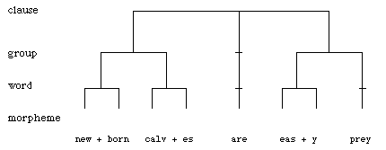
Fig. 16: Rank-based constituency
| rank: | axis: | metafun: | Skies | will | be | clear to partly cloudy | over the rest of California |
| clause | system | textual: interpers.: ideational: |
[unmkd theme, unmkd culmination, non-conjuncted; indic.: decl.: untagged, temporal, non-interactant, positive; relational: ascriptive & intensive & middle & locative ...] |
||||
| structure | textual: | Theme | Rheme | ||||
| interpers.: | Subject | Finite | Predicator | Complement | Adjunct | ||
| Mood | Residue | ||||||
| ideational: | Carrier | Process | Attribute | Location | |||
| group/phrase | system | [nm gp] | [vb gp] | [nm gp] | [prp phr] | ||
| structure | etc. | ... | ... | ... | ... | ||
We can treat the type of constituency tree above as the norm: all constituents of a units of the rank next below. However, the theory also needs to allow for rankshift, whereby a unit one rank serves as if it were a unit of a lower rank, i.e., it is downranked. For instance, a clause may serve as if it were a group as in (double-barred square brackets, [[ ]], mark the rankshifted clause):
They'd send you a bill for a percentage of [[ what they are worth ]]
Rankshifted units differ from ranking ones in various ways, both in their own make-up and in the selections that are open to them. For example, a rankshifted clause is typically not available for argument, it cannot be confirmed or denied. It is thus important that the theory should distinguish between ranking units (units functioning according to their rank) and rankshifted ones (units serving as if they were units of a lower rank).
The metafunctional organization of the grammar that we illustrated above for the clause applies to the other ranks as well. For example, the nominal group has ideational systems of THING TYPE, CLASSIFICATION, EPITHESIS and QUALIFICATION, interpersonal systems of PERSON and ATTITUDE, and textual systems of DETERMINATION (cf. Figure 19 below). But the way the metafunctional contributions map structurally one onto another varies; in particular, groups are organized both as organic wholes and as logical complexes. Figure 21 below shows an example of an English nominal group.
Languages differ both with respect to the number of ranks and with respect to the division of grammatical labour between the different ranks. For example, Chinese and English do fairly little grammatical work at word rank, and Vietnamese even less. In contrast, many languages favour word rank as the domain of realization for e.g. nuclear transitivity and modality. Languages also differ with respect to the nature of the rank that is intermediate between words and clauses. Both Chinese and English 'derive' the units of that rank from both ends, as it were: groups are expansions of words (groups of words, with a Head and Modifiers) whereas phrases are contractions of clauses (mini-clauses, with a configuration of Process + Range). The preposition is thus a verbal kind of word, as is shown by English prepositions such as regarding, concerning). In Chinese this principle is even more pronounced; items such as zai serve either in phrases or in clauses: we can interpret the items in phrases as a class of verb, postpositive verb (cf. Figure 20 below). Japanese also has phrases, but the phrasal relation comes after the nominal group (i.e. nominal group + wa, ga, o, ni, o, kara, made etc.), just as the Process of a clause comes at the end of the clause; the phrasal relation is a post-position rather than a pre-position. Some languages have both phrases and nominal affixes for realizing the function served by the nominal group, morphological cases, often using cases alone for participants and preposition or postposition (adposition) + nominal group marked by case for circumstances (as is the tendency in German). Other languages tend to use case-marked nominal groups for both, as Finnish does. Yet other languages have no phrases at all, but draw on logical sequences of dependent verbs instead to bring certain participants or circumstances into the clause (e.g. Akan). Languages may also use the Process of the clause as the site for marking transitivity roles, as Tagalog does for the Theme of a clause.
As grammars evolve, there is a tendency for items to move down the rank scale, becoming phonologically reduced in the process. For example, pronouns (word rank) may slide down the rank scale to become pronominal affixes (morpheme rank) serving as parts of verbs, and auxiliaries (word rank) may similarly be reduced in rank to become affixes (morpheme) rank serving as parts of verb to indicate tense/aspect, modality and the like. As an intermediate step, such items may be cliticised to other elements before they become bound morphemes. This downranking over time is one aspect of grammaticization, a process whereby categories become more tightly integrated into the grammatical system and the lexicogrammatical system creates new meanings within some grammatical subsystem. Another aspect of grammaticization is reduction in delicacy: see below.
2.3 (3) By delicacy: from more general to more particular
Rank can be interpreted as a principle for distributing a lexicogrammatical system into a number of different domains or units organized into a constituency hierarchy, or hierarchy of organic wholes and their parts (a "holarchy", as it has been called with reference to biological and other non-semiotic systems). This factoring of the overall system into subsystems according to rank makes the overall system both simpler and more powerful. It makes the overall system simpler precisely because it is factored or partitioned into subsystems that are relatively independent of one another and interact through preselection rather than 'wiring' in a system network. Each subsystem thus has its own domain of responsibility. It makes the overall system more powerful because since each subsystem has its own domain of responsibility, the different subsystems are in principle freely variable with respect to one another so that the overall potential of the lexicogrammatical system is the total intersection of all possible features within all subsystems. This total intersection is, in fact, infinite since, when a system is ranked (i.e. factored into subsystems according to rank), its potential can expand through rankshift (see above): for example, a clause can serve as if it were a group or word, thus opening up the full clausal subsystem at group or word rank.
As an organizational principle, rank is reasonable easy to detect (although, in linguistics, it has sometimes been confused with other principles of organization, notably stratification: sometimes morphemes have been wrongly thought to consist of phonemes instead of being realized by [sequences of] phonemes); rank represents a fairly overt or explicit kind of order, that of a whole to its parts, and it is even reflected partially in many writing systems. However, lexicogrammar is also organized in a more covert or implicit kind of way. We have already referred to this kind of organization: the ordering of the systems of a system network in a relation of delicacy. For example, the systems PROCESS TYPE, TYPE-OF-BEING, and RELATION TYPE in Figure 12 are ordered in increasing delicacy. This kind of lexicogrammatical order is more covert in that it is not directly reflected in the wording of a grammatical unit; rather, it is a more abstract kind of order that is imposed on the systems whose options that wording realizes.
Delicacy is a very simple yet powerful principle of organization. It orders systems on a cline from the most general systems of options to the most specific ones; and at the same time, it orders realizations of these options according to their systemic environment. This means that the realizational properties of a clause or any other grammatical unit can be 'placed' in the system so that it applies only to the appropriate subset of units. For example, only 'yes-no interrogative' clauses have the realizational property of Finite preceding Subject (i.e., Finite ^ Subject); it does not apply to interrogative clauses in general, nor to indicative clauses in general, nor to major clauses in general. By the same token, if 'indicative' clauses have the realizational property of having an explicit Subject (i.e, + Subject), then all more delicate options accessible from 'indicative', such as 'yes-no interrogative' also have that property (cf. Figures 4 and 7 above). That is, realizational properties are inherited along the cline of delicacy from less delicate to more delicate. Delicacy can thus be interpreted as a general principle for organizing lexicogrammar, just like rank; more specifically, it is a principle for distributing information in lexicogrammar according to taxonomic domain of application.
But delicacy is, in fact, more than an ordering of systemic options and, by implication, the realization statements associated with them. It is also the principle according to which the two 'parts' of lexicogrammar, lexis (vocabulary) and grammar are related. Looked at from the point of view of grammar, lexis is most delicate grammar; and looked at from the point of view of lexis, grammar is least delicate (most general) lexis. In other words, the systemic options of the more general systems in the system network (such as 'declarative/interrogative'; 'wh-/yes-no'; 'material/mental/verbal/relational'; 'existential/expanding relational'; 'intensive/possessive/circumstantial'; 'specific/non-specific') are realized by grammatical structure fragments (e.g. Subject ^ Finite, Process + Existential) or grammatical items (e.g. interpersonal particles ka, ne, yo in Japanese or ma, ne, ba in Chinese; determiners such as the/this/that and auxiliary verbs such as do, be, have in English), whereas the more delicate options are realized by lexical items (e.g. lexical verbs be/represent/mean/indicate/symbolize; and lexical nouns man/boy/woman/girl). As we have noted, delicacy is a cline, so there are regions intermediate between grammar and lexis, such as prepositions in English and phase in Chinese. Such intermediate regions serve to reveal the gradual move between grammar and lexis along the scale of delicacy. And one aspect of the semogenic process of grammaticization is the move over time of items from lexis to grammar as they are generalized; for example, it is common in languages for some lexical items of motion to be generalized in delicacy to serve as grammatical items realizing options in tense systems (cf. English going to, French venir de, Swedish komma att) and for some lexical items of material manipulation: grabbing, taking to be generalized in delicacy to serve as grammatical items marking Goals (under certain conditions; cf. Chinese ba, originally a lexical verb 'take'). Figure 18 gives a very simple example of the move towards lexical delicacy in the system of PROCESS TYPE in English within relational clauses.
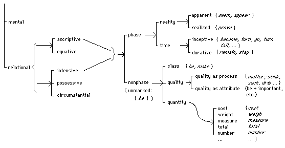
Fig. 18: Towards lexical delicacy in intensive ascriptive relational clauses
Grammar and lexis are never totally divorced from one another. On the one hand, small lexical sets are often associated with little 'local grammars', i.e. delicate variations in grammatical potential, as is the case with the lexical set of perceptive processes in English (see, notice, glimpse, espie, hear, overhear, feel, taste, smell; sense, experience), which can combine with different kinds of Phenomenon than cognitive or affective processes. (For example, we can say I saw somebody crossing the street but not I thought somebody crossing the street.) On the other hand, collocations between small lexical sets typically occur between lexical items realizing closely bonded grammatical functions such as Process + Medium (neigh + horse, bark + dog; age + wine, mature + cheese), Process + Range (wreak + havoc, do + dance, make + mistake; go + mad/crazy/insane/bananas/bonkers; fall + ill/sick), Process + Manner (regret + deeply, understand + completely), and Facet + Thing (gaggle + geese, school + fish, flock + birds); and in Chinese also Event + Result and Measure + Thing.
In the description of the lexicogrammatical systems of various languages, delicacy has proved a helpful conceptual resource for managing complexity. Lexicogrammatical systems are explored and mapped out at a fairly low degree of delicacy so that the overall distribution and organization of the system can be established. This overview that is limited in delicacy provides the map that can guide subsequent excursions into more delicate systems. This also applies to the move from grammar to lexis: lexical organization can be investigated in terms of the categories of the grammatical part of the system; that is, grammar construes the general parameters in terms of which lexical distinctions are made.
3. System and text
3.1 Function and rank
The grammatical system of every natural language can be summarily presented as a function/rank matrix, where function is used in the sense of metafunction (see Section 2.1). So for English we can construct such a matrix as in Figure 19.
| ideational | interpers. | textual | ||||||
| rank | [class] | logical | experiential | (cohesive) | ||||
| clause | complexes (clause |
TRANS. (process type) | MOOD MODALITY POLARITY |
THEME CULMIN- ATION VOICE |
COHESIVE RELATIONS: | |||
| phrase | [prep.] | phrase | MINOR TRANS. (circ. type) | MINOR MOOD (adjunct type) | CONJUNC- TION |
|||
| group | [verbal] | group | INTER-DEPENDENCY (parataxis/ hypotaxis) |
TENSE | EVENT TYPE ASPECT (non-finite) |
FINITE- NESS |
VOICE DEICT- ICITY |
REFERENCE, ELLIPSIS & SUBSTITU- TION |
| [nominal] | LOGICAL-SEMANTIC RELATION (expansion/ projection) |
MODIFIC- ATION |
THING TYPE CLASSIFI- CATION EPITHESIS QUALIFI- CATION |
PERSON ATTITUDE |
DETERMIN- ATION |
CONJUNC- TION |
||
| [adverb.] | MODIFIC- ATION |
QUALITY (circ. type) | COMMENT (adj. type) | CONJUNC- TION |
||||
| word | word) | DERIVA- TION |
(DENOT- ATION) |
(CONNOT- ATION) |
||||
| info. unit | info. unit complex | INFO. TAXIS | ACCENT- UATION |
KEY | INFO. FOCUS | |||
| complexes | simplexes |
There are four features to note about this figure.
(i) Each cell is the location (point of origin) of a system network, indicated by the name in small capitals. Where two names are given (e.g. MOOD and MODALITY), this means that it is useful on semantic grounds (i.e. 'from above'; cf. Section 1.2, 3.3) to recognize two (or more) subsystems; but since these share the same address in the matrix, they have a common point of origin and thus form a single network. As we have seen, a system network is a theory of options: it defines a topological region in terms of the meanings that can be construed by the grammar. The network is open-ended in delicacy: whatever distinctions are displayed, it will always be possible to add more.
(ii) Structural considerations are embodied in the notion of rank: each rank is a structural unit whose constituent functions are typically fulfilled by classes of members of the rank below, clauses are composed of (functions filled by classes of) groups and phrases, and so on. Compare an organic 'rank scale' in biology: organ-tissue-cell. But beyond this, structure plays no part in determining the topology; hence the matrix accommodates various alternatives to a strict constituent structure. Some of this variation appears to be systematic: thus, English and at least some other languages display a tendency for:
| experiential systems | to be realized | segmentally (by constituency) |
| interpersonal systems | " | prosodically (by colouring) |
| textual system | " | periodically (by oscillation) |
| logical systems | " | serially (by iteration) |
(iii) The matrix has the indeterminacy that is a property of all grammatical representations. Thus the structural manifestations of rank are not quite identical across the different columns. For example, in English the interpersonal grammar displays a layering of structure intermediate between clause and phrase/group (the Mood + Residue referred to in Section 1.3); and in the textual metafunction there is a parallel structure in the form of the information unit (locus of Given + New), which in unmarked association with the clause but not identical to it. Likewise there is indeterminacy across the columns: a system may originate with one metafunction, but be activated from within another; for example, English VOICE, where (a) what is possible is determined experientially, but (b) which option is taken up derives from its association with the textual systems of INFORMATION and THEME.
(iv) Each network generates its own structural 'output', in terms of segmental configurations or other types of structure; the latter may however still be represented in configurational form: e.g. the periodic movement, or oscillation, between two kinds of prominence ("information flow") in the English clause, represented as a two-fold configuration of Theme + Rheme and Given + New. Thus an item under description will typically have multiple representations. For example, a clause in English, or Chinese, or Japanese (and possibly in all languages) will be represented three times, that is, as a mapping onto each other of three different structures, one deriving from each metafunction. Figure 20 shows such a multilayered structure.
| qiu | feng | bà | shùyè | chui- | luò | zài | dì- | shàng | ||||||||
| autumn-wind | marker of Goal | leaves | blow down | on | ground | |||||||||||
| clause: (i) material & middle: eventive & locative & (ii) declarative & positive & nonmodal & (iii) unmarked theme & unmarked information focus | ||||||||||||||||
| Actor | Goal | Process | Location | |||||||||||||
| Subject | Compl-ement | Predicator | Adjunct | |||||||||||||
| Theme | Rheme | |||||||||||||||
| New | ||||||||||||||||
| NG | marker | NG | VG | phrase | ||||||||||||
| Classifier | Thing | Thing | Event | Result-ative | Minor-process | Minor-range | ||||||||||
| noun | noun | noun | verb | verb | pre-positive vb | NG | ||||||||||
| Thing | Facet | |||||||||||||||
| noun | post-positive noun | |||||||||||||||
In some languages at least it may be helpful to represent certain structures both experientially, as segmental configurations, and logically, as iterative complexes: for example, the English nominal group: see Figure 21. Note that each line in the analysis is accounting for a different vector of agnation: that is, it is expressing the way the item is systemically related to certain other items.
| γα | ------ |
------- |
γβ | |||
| ε | δ< | γ< | β< | α | ||
| the | two | greatest | professional | golfers | of | all time |
| Deictic | Numerative | Epithet | Classifier | Thing | Qualifier: | |
| Minor Process | Minor Range |
3.2 System and instance
What kind of activity, then, is grammatics? What is a grammarian doing, in working on the grammar of a language? Doing grammar means establishing, and explaining, the principles that lie behind the wordings of a natural language: in traditional terms, its syntax, morphology, and lexis (vocabulary).
This division into three parts is a methodological one: in Western linguistics, different methods evolved for syntax (grammar above word rank), morphology (grammar below word rank), and lexicology (relations and meanings of words). As far as the phenomena themselves are concerned, they constitute a single stratum (cf. Section 4.1 below). In many languages the distinction between syntax and morphology is unnecessary even at a methodological level, since the words themselves are invariant ("there is no morphology") and hence no special methods are needed to account for grammar below word rank (e.g. Chinese, Vietnamese).
"Establishing and explaining the principles" means recognizing that the grammar is not random; it forms a system. (This is of course an assemblage of different systems, but we can still refer to the totality as a system.) But the task of grammatics is not just to describe the system; it is also to relate the system to the instance, or rather (since these are not distinct steps) to describe the system as it relates to actual instances of language (referred to as text).
This relation of system to text, known as instantiation, is not as simple as it first appears; in fact, it is highly problematic. System and text are not two different things; they are the same thing seen from different perspectives, different standpoints of the observer. A helpful analogy may be that of "climate" and "weather": there is only one set of phenomena here, not two, but we call it weather when we experience it instantially, as meteorological "text", and climate when we are taking a longterm perspective in order to establish and explain the principles, the meteorological "system" that lies behind. Text is meaningful only because it is the instantiation of a systemic potential: this is what we mean by saying that speaker and listener must share a "command of the language", an unconscious awareness of the interstratal patterns (how forms of wording realize meaning and are realized in sound) and of the topology of each stratum (how what is said contrasts with what might have been said but was not). By the same token, our concept of system is valid only because it is instantiated in text: each instance keeps alive the potential, on the one hand reinforcing it and on the other hand challenging and changing it. This dialectic of text and system is what we understand by a living language.
A language "lives" in the sense that it is a dynamic open system, which is maintained in existence by constantly changing in interaction with its environment. The system is probabilistic (like the climate); when we say that there is a choice, say in MOOD, between 'declarative' and 'interrogative', we mean "with a certain degree of probability attached". (The probability is likely to vary, of course, in different functional contexts: there are local as well as global probability profiles.) Hence each instance of an indicative clause infinitesimally perturbs the probabilities; and now and again the effect will be catastrophic, bringing a new system into existence or else eliminating an old one (as happened in English when the probability of informal singular thou as opposed to polite or plural you dropped gradually to zero). The network representation of a systemic grammar is a way of modelling the potential so as to allow for its ongoing evolution. One aspect of this evolution is grammaticization: instantial patterns in texts may gradually become part of the grammatical potential.
It is a feature of semiotic systems (since they are social; see Section 4 below) that an instance carries value. Thus a given text may be particularly highly valued: for example, a political manifesto, or a literary artifact. It falls to grammatics, therefore, to interpret a text not only as a "window on the system" but also as an object in its own right, explaining not merely why it means what it does but also why it is valued as it is. In contexts of language education, for example, the analysis should show why one piece of a learner's writing is more effective than another.
Much of the work of the grammatics, however, may be located precisely at some intermediate point on the instantiation cline: for example in the study of codes and of registers. Registers are functional (or "diatypic") varieties of a language that evolve in different contexts of use: formal or casual, technical or non-technical, more openended or more closed. They are not "variants" in the sense of alternative realizations of a common meaning at some higher stratum. Codes are subcultural variants, the different discourses of young and old, males and females, different classes or casts within a society; they are different semantic styles typically associated with some common generalized context of use. Codes are hard to study precisely because their instantial status is indeterminate: should they be represented as recurrent classes of instances or as subsystems of the overall system? To use our meteorological analogy, it is not clear whether codes should be treated as longterm weather trends or as minor variations in the climate. (The answer is, in fact, as both; but that is just where the difficulty arises.)
In working on the grammar of a language, one tries to move freely along the instantiation cline. We are able to do this more easily once we have a corpus, a treasury of instances that we can come back to all the time for renewal of connection. It is this that constitutes the grammarian's essential data bank. The corpus is not a substitute for a theory; it does not "contain all the facts", like hidden words buried in a jumble of letters. Facts, and the principles behind them, have to be construed; but they can be construed much more reliably on the quantitative foundation of a modern computerized corpus.
We can represent the cline of instantiation diagrammatically as in Figure 22.
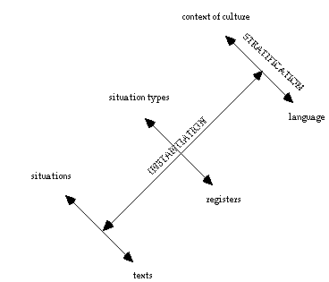
Fig. 22: Instantiation
At the present stage of knowledge, we usually try to write a grammar for the system of a language as a whole, noting as "special cases" lexicogrammatical variation due to register or code. The reason for this is that such variation is largely quantitative; it involves the relative frequency of terms in systems, rather than the presence or absence of an entire system. For example, there are certain registers in which first and second person are extremely rare; but we will probably not want to write a separate grammar for those registers, with the person system entirely left out. When it comes to semantic representation, since codes are in fact semantic variants, they can be best explained by reference to a common semantic system, as in Hasan's studies of socio-semantic code variation among mothers and children in Sydney. Registers on the other hand have no "higher-level constant" and so may be more effectively represented as distinct semantic subsystems.
3.3 Descriptive principles
As with any scientific theory, the basic concepts (things like stratum and metafunction, realization, instantiation, and delicacy and rank) are not empirically verifiable; they form an abstract framework, or model, set up as a means of exploring and explaining. (An abstract model of this kind is itself a semiotic system: see Section 4 below.) Such a model is all the time being refined and elaborated in use.
By contrast with these general theoretical categories, the descriptive categories are set up by reference to specific features of given languages, and hence in principle are verifiable. That is to say, they can be characterized in ways which make it possible to decide whether or not something is an instance, and whether or not some category is present in the system at all. Two kinds of considerations are typically involved.
(i) Most generalizations made in describing grammar are valid only with some degree of probability. They allow us to identify "exceptions", for which we then seek a further generalization; and so on. For instance: we say that the English Moodtag consists of Tagfinite + Tagsubject, where the former repeats the Finite operator, and the latter repeats the Subject (each grammaticized in deictic form, as in Mary knew, didn't she?). Typically, the tag does repeat the Finite; but we also come across instances like She'll like fairy tales, does she? where Finite will is replaced by does. The meaning is 'I expect she likes fairy tales; will you confirm my expectation?'. This contrasts with She'll like fairy tales, will/won't she?, which would mean 'Do/don't you share my expectation?'; and it is an instance of a more delicate subclass whereby a modal Finite in the clause is replaced by a temporal one in the tag (cf. It must have been crowded in there, was it?). And where the tag system in general favours reversing the polarity (positive > negative, or negative > positive), in this subsystem the local probability is for the polarity to remain constant, though in both cases the other, marked option also occurs.
Such probabilistic generalizations can still be tested, by reference to quantitative patterns in the corpus. They are significant because they enable us to define the meaning of doing something by contrast with the meaning of not doing it, or of doing something else. Certainty then appears as the limiting case of probability, the point where no further meaning is created. Thus if the second part of the generalization above ("repeat the Subject") holds true in all instances, there is no more delicate choice point here at which more semantic space is opened up. We then go back to the corpus to check; we find But my husband heard it too, didn't you? and we have to decide whether that fits the pattern or not. This leads into the next principle to be considered.
(ii) Clearly the answer to whether you in the tag in the last example is a repetition of the Subject or not depends on how we are looking at it. If we are looking at it 'from below', at how it is realized in form, then it is not; the pronominal of my husband must be he. If we are looking at it 'from above', at the meaning which is being realized, then it is; you is functioning anaphorically and the two are co-referential. Probably the speaker turned towards her husband while moving into the Tag; but note that we do not need any information of this kind from outside the text, it is the text itself that construes the meaning and the context of situation for us. Because we know the MOOD system of English, including the principle of the Tag (based on the meaning of Subject as the modally responsible element in the proposition), we are able to interpret the instance by locating it in its place in the meaning potential. And here we are adopting the third perspective, looking at it 'from around'.
As we saw in Section 1, it is a critical feature of systemic grammatics that the grammarian has trinocular vision, looking at any phenomenon from each of these three stratal perspectives. We may choose to privilege one or another; but all are taken into account, and since they will typically conflict the optimum description for any particular occasion will almost always be a compromise. Traditionally grammarians have begun by looking 'from below', because this is the most obvious way in: we ask questions like "What is the meaning of wa in a Japanese clause?", first identifying a form (this then becomes the grammatical 'fact'), and then asking what this form means. But in a functional grammatics such as systemics, relatively greater priority is accorded to the perspective 'from above', where the question is one such as "How does the Japanese clause construe the flow of information?". Interestingly, the perspective that seems to be most often ignored is that 'from around', where we construct the paradigmatic environment: the set of options that constitute the local grammatical potential. In this example, we would be setting up the network of systems that constitute the textual resources of the clause: on the analogy of English, the systems of THEME and of INFORMATION, and their realization through the structural elements of Theme + Rheme and Given + New.
The analogy with English may not hold, of course; and here again it is the trinocular perspective that is vital. There is no objective criterion for deciding how much alike two phenomena must be for us to call them by the same name: in the last resort questions such as "Is there a passive in that language?" or "How do we recognize the Subject in this language?" are questions about whether to transfer labels in comparing one language with another. There is nothing wrong with making predictions about one language on the basis of what is known about others; this is a normal way of proceeding. But one has to guard against foisting the categories along with the labels. The systemic approach would be, rather, to ask a question such as "Is there a system which redistributes the participants into different textual statuses?" (as English Actor, Goal, etc. are redistributed into different patterns of thematic and information structure). If there is, we call it the VOICE system; and then if it sets up some kind of unmarked/marked opposition, we may call the unmarked term "active" and the marked term "passive". Similarly, instead of "How do we recognize the Subject?" we might ask "Does the grammar incorporate an element having a specific function with regard to validating a proposition?", if so, we justifiably refer to this as the "Subject". All these steps depend on adopting the same 'trinocular' stratal perspective.
4. Perspectives beyond lexicogrammar
In this final section, we shall briefly contextualize what we have discussed. First we consider grammar itself in its (stratal) environment in language in context, and then we contextualize our own grammatics, systemic theory, with respect to other kinds of grammatics and with respect to language and other kinds of systems.
4.1 Grammar as a stratal subsystem of language in context
Grammar is, as we put it above, the system of wordings of a language. More precisely, it is the system for realizing meanings in wordings. The systems of meanings is semantics, so we can say that semantics is realized by grammar. For example, the interpersonal resource of mood in the grammar realizes the interpersonal resource of speech function in the semantics; thus a declarative clause realizes a move in dialogue that gives information. Realization is a relation that orders whole subsystems of language relative to one another in symbolic abstraction; we say that it stratifies these subsystems. Semantics and grammar are stratified, with semantics as the higher stratum and grammar as the lower one. In a similar way, wordings are realized by sounding (or writing); that is, grammar (the system of wording) is realized by phonology (the system of sound) (or by graphology, the system of writing). For example, delicate options within the interpersonal resource of mood in the grammar are realized by distinctions in tone (direction of pitch movement) in the phonology; thus a declarative clause is, unmarkedly, realized by falling tone. The three strata or stratal subsystems semantics, grammar and phonology (graphology) make up the linguistic system. Of the three, grammar is the stratum that is purely internal to the linguistic system, slotted in between two other linguistic strata. Grammar thus has to be organized in such a way that it can both serve to realize semantics and at the same time be realized by phonology. In contrast, both semantics and phonology have to interface with systems outside the linguistic system.
Figure 23 represents the stratal organization of the linguistic system and illustrates it with the interpersonal example indicated above: statement is realized by declarative in neutral key, which is realized by falling tone. As the diagram shows, the terms at the different strata, 'statement', 'neutral', and 'falling', enter into different systemic relationships within each stratum. This multiplication of systemic relationships is part of what gives power to a stratified system. In the diagram, we have shown each stratal subsystem within a circle; the circle represents the stratum to which it belongs. The circles increase in size with the move from phonology via grammar to semantics, to indicate that these systems increase (both in size and in complexity) with the move to a higher stratum.
Our example comes from the interpersonal metafunction (at clause rank, in the grammar); but the stratal principle it illustrates also applies to the textual, experiential, and logical metafunctions. However, there is one respect in which the example is not representative of the general principle of interstratal relations. It suggests that the interpersonal metafunction and, by implication, all the metafunctions are projected throughout the whole linguistic system to organize each stratum. However, the general principle is that the metafunctions are manifested as organizational principles within semantics and grammar but not within phonology. Why should this be the case? The explanation is quite straightforward. Semantics and lexicogrammar are the content strata of language, whereas phonology (or graphology) is the expression stratum. The metafunctions are modes of meaning, not modes of sounding or writing. Being modes of meaning, the metafunctions are manifested in the organization of the two strata concerned with meaning, the content strata, semantics and lexicogrammar.
Figure 24 shows the metafunctional organization of the content strata together with the other global dimension of organization, stratification. It also represents the stratal environment of the whole linguistic system, the context in which the system is embedded. We will return to context presently, but let us first say a few more words about metafunction and stratification. The metafunctional organization of both semantics and lexicogrammar is the most central aspect of the general stratal principle that semantics and lexicogrammar are natural in relation to one another: lexicogrammar is the lower of these two content strata; it is not an autonomous formal system. Lexicogrammatical organization, both systemic and structural, is semantically 'transparent' rather than opaque. For example, given a grammatical structure such as Theme + Rheme, Mood + Residue, or Carrier + Process + Attribute + Location, we can read it as a natural realization of a semantic configuration; and given a grammatical system such as MOOD, we can read it as a natural realisation of a semantic system such as SPEECH FUNCTION. (Grammatical metaphor complicates the picture; but the metaphorical expansion of the system depends on the natural relationship between semantics and lexicogrammar.) In contrast, the relationship between phonology (or graphology) and lexicogrammar is largely conventional (arbitrary) rather than natural. For example, in English, given some phonological structure such as Onset + Peak + Coda or Ictus + Remiss, we cannot read it as congruent with a lexicogrammatical structure. Conversely, grammatical structures are not congruent with phonological ones, and grammatical and lexical items are similarly realized conventionally by different sound shapes. (There are local little partial iconic relationships, but these are marginal seen against the background of the overall system.) One exception to the general principle is intonation, more specifically TONE and TONICITY at the highest-ranking unit of the phonological system, the tone group. TONE stands in a natural relationship to the interpersonal grammatical system of KEY, and TONICITY stands in a natural relationship to the textual grammatical system of INFORMATION FOCUS. The natural relationships here are part of the more general principle that interpersonal features tend to be realized prosodically and textual features tend to be realized periodically (see Section 3.1 above). There is no comparable correspondence within the ideational metafunction; and all the interpersonal and textual grammatical and lexical items of lexicogrammar are realized conventionally. (At a more abstract level, we can recognize the various modes of organization we find within the content strata, iterative, segmental, prosodic and periodic, also within phonology; but here they are not directly associated with modes of meaning.)
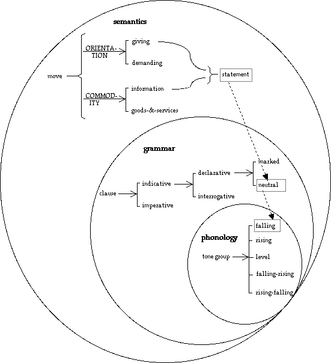
Fig. 23: Example of interstratal realization (interpersonal metafunction)
Let us now return to context. Context is a higher-level semiotic system in which language is 'embedded'. More specifically, language is embedded in a context of culture or social system and any instantiation of language as text is embedded in its own context of situation. Context is an ecological matrix for both the general system of language and for particular texts. It is realized through language; and being realized through language means that it both creates and is created by language. This realizational relationship is organized according to the principle of functional diversification. Like language, context is functionally diversified into three general domains: field, tenor and mode. Field concerns what's going on, the social processes and the domains of subject matter created by language in the realization of these social processes. Tenor concerns who's taking part, the social roles and relations of those taking part in the interaction and the speech roles and relations created by language in the realization of these social roles and relations. Mode concerns what role language is playing in context, its distance to those involved according to medium (spoken, written and various more complex categories) and channel (face to face, telephonic, etc.), its complementarity with other social processes (from ancillary to constitutive), and its rhetorical contribution (didactic, instructive, persuasive, and so on). Field tends to be realized by ideational meanings, tenor by interpersonal meanings, and mode by textual meanings. For example, the tenor of the relationship between the interactants in a dialogue correlates with the range of speech-functional options they select.
To illustrate how an instance of language in context is stratally and functionally distributed, we will just provide a fragment of a description of the following example from a weather report:
Skies will be clear to partly cloudy over the rest of California.
The description given below specifies (i) contextual features of field, tenor and mode (with reference to the type of situation the exmple belongs to), (ii) semantic features for the example within each metafunction (ideational: process configuration, interpersonal: move and textual: message), and (iii) lexicogrammatical features from grammatical systems within the three metafunctions and the structural strands realizing these features:
| functional diversification: | |||||
| stratification: | field-ideational | tenor-interpersonal | mode-textual | ||
| context (of register: situation type) | Dissemination through media: daily newspaper; State of environment: natural: weather (present & immediate future) |
Expert to lay audience; Expert: impersonal, with uncertainty; Audience: general public |
Informative: reporting & forecasting;
Written: print; Accompanied by other semiotics: maps etc. |
||
| semantics | process configuration of being, ascription of graded quality, future time | move of giving information (statement), positive and temporal | message of unmarked information distribution, with physical feature as point of departure and place as news | ||
| lexicogrammar (at clause rank) |
relational: ascriptive & intensive & middle & locative: place
Carrier (skies) + Process (will be) + Attribute (clear to partly cloudy) + Location (over the rest of California) |
major: indicative: declarative: untagged & non-interactant & temporal & temporal
Mood [Subject (skies) ^ Finite (will)] ^ Residue [Predicator (be) ^ Complement (clear to partly cloudy) ^ Adjunct (over the rest of California)] |
unmarked theme & unmarked culmination
Theme (skies) ^ Rheme (will be clear to partly cloudy over the rest of California) |
||
| graphology | graphological features: eg clause realized as an orthographic sentence, grammatical words separated by spaces | ||||
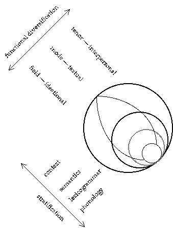
Fig. 24: The metafunctional diversification of content
We are thus interpreting lexicogrammar not as an isolated system, but rather as an integral subsystem of language-in-context. More specifically, lexicogrammar is the stratum that is internal to language, interfacing with both semantics and phonology/ graphology; and together with semantics it forms the content system of language. It shares the metafunctional organization with semantics; and this metafunctional organization resonates with the diversification of context into field, tenor and mode. Stratification and metafunction thus together construct the overall semiotic space in which the systems of language in context are distributed. But as we have seen with lexicogrammar, a stratal subsystem has internal organization; in particular, lexicogrammar is organized axially into systems (ordered in delicacy) and structures, and it is organized by rank into a hierarchy of units: clauses, groups/phrases, words, morphemes (in English). It is conceivable that a semiotic system such as language would organize its stratal subsystems internally according to very different principles, so that the internal organization we have discussed so far would be unique to the stratal environment of lexicogrammar. However, the basic principle is just the opposite: all stratal subsystems are organized on the same 'grid' by axis and rank. That is to say, all strata have two modes of axial organization, the paradigmatic mode, networks of systems such as we have met in grammar, and the syntagmatic mode, structural configurations of functions; and these system-structure cycles are distributed according to a ranked hierarchy of units. We can thus interpret axis and rank as general intra-stratal principles of organization that are manifested in the different stratal environments of language in context: see Figure 25.
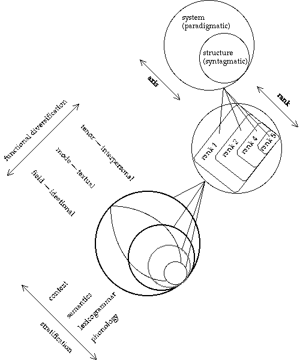
Fig. 25: Axis and rank as principles of intra-stratal organization
manifested in the different stratal subsystems of language in context
4.2 Locating systemic theory in the wider world
Among current theories of grammar, systemic grammatics can be located within a broadly defined class of 'functional' grammars that are typically characterized by certain orientations: it is oriented towards
| function | rather than | forms |
| rhetoric | " | logic |
| text | " | sentences |
| resource | " | rules |
| meaningfulness | " | grammaticality |
Within this general class, we have seeen that systemics has certain particular characteristics. (i) It is paradigmatic, taking the system (theory of possible and probable) as its base rather than structure (theory of composition). That is, the paradigmatic axis is the overall organizing principle rather than the syntagmatic axis. (ii) It is stratified, with the strata related by realization ("metaredundancy", not time/cause) and extended beyond language to the context of situation and of culture (e.g. via genre and ideology). (iii) It is comprehensive, varying in delicacy and in instantiation, these being defined by reference to the overall system of a language. (iv) It is multifunctional, assigning equal value to interpersonal and textual as well as to ideational modes of meaning (at both the semantic and lexicogrammatical strata); and representing these modes of meaning as simultaneous both in system and in structure.
How does our "grammatics" relate to language itself? Let us set up a simple typology of systems (where system, as always, stands for 'system-&-process'):
| (1) | physical | systems | ||||||
| (2) | " | + life | = biological | systems | ||||
| (3) | " | " | + value | = social | systems | |||
| (4) | " | " | " | + meaning | = semiotic | systems |
A language is fourth-order system, to be investigated (1) acoustically, (2) neuro-physiologically, (3) culturally, as well as (4) lexicogrammatically (or rather, (4) in terms of the 'core' strata of semantics, lexicogrammar and phonology). A theory of any domain is also a semiotic system, one of a dedicated kind: part evolving, part designed as a means of reflection and of action. A theory of language is thus a dedicated meta-semiotic.
The prototypical semiotic system is a natural language: human 'consciousness' can be defined as the ability to mean. At the same time, a natural language is contextualized among other semiotic systems �everything that we denote by "culture": visual and other art forms; patterns of behaviour, secular and religious; social institutions, modes of self-presentation and so on. We can use our grammatics to interpret these various non-linguistic semiotic systems, asking to what degree of specificity they are like natural language. In particular, to what extent does our understanding of the problematic relation between system and instance in language apply to semiotic systems as a whole? And to what extent does language function as a "connotative semiotic" through which other semiotic systems are presented (or "realized")?
Language does not passively "reflect" or "correspond to" some pre-existing reality. Language constructs reality; or rather, we, as human beings, construct reality in language. We do this through the metafunctional interplay of action and reflection: language both enacts interpersonal relationships and construes human experience. Thus the (speaking) subject, the multifaceted personae, the hierarchies and power structures that we call society are all created in language. Ideologies of class, gender, and the like are established and maintained, and also challenged, through the meaning potential of language.
Humans exchange goods-&-services and they also exchange information: human history is an ongoing dialectic of material and semiotic processes. (We can watch this pattern emerging in the first few months of each individual's life.) In the scientific, "modern" age all systems were modelled in material terms, with physical systems taken as prototypical. In the "postmodern" information society we are increasingly using semiotic models, interpreting even physical systems in terms of an exchange of meanings. Quantum physics, in particular, has veered us in that direction. This puts grammatics squarely in the centre of the stage; not just as theory of grammar but as theory of knowledge, that is, of all systems construed as systems of meaning. In this setting, grammatics means using grammar to think with: its context of operation is as a theory whereby our understanding of language may be brought to bear on phenomena of any kind.
Neither systemic theory nor any other theory of language has reached anywhere near this level of achievement. We are still rather far from understanding even the basic properties of a semiotic system. What is important at this stage is to locate theories of grammar in the current intellectual context, so that as they continue to be elaborated and improved they move closer to, and not further away from, the transdisciplinary concerns of thoughtful people as a whole.
Appendix 1: Glossary
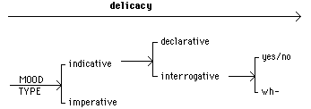
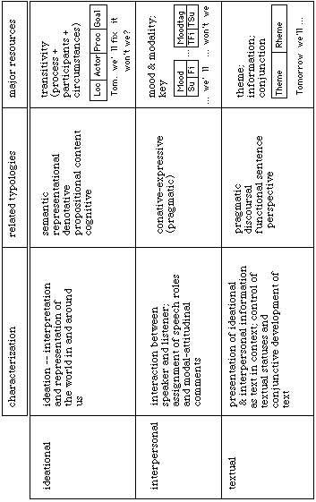
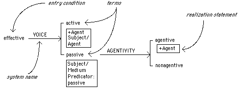
Appendix 2: Systemic conventions
[i] System network
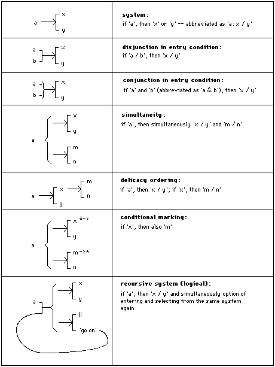
[ii] Realization statements
A realization statement consists of an operator, such as insert or conflate, and one or more operands, at least one of which is a grammatical function.
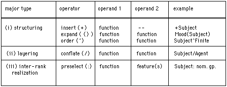
Further reading
Below we list a number of books and articles having to do with systemic theory and description. These are organized under four headings:
1. Discourse analysis
A general account of English discourse from a lexicogrammatical and semantic point of view is provided by Martin (1992). Hasan (1985) is concerned particularly with poetic and other literary modes of discourse. Halliday (1985) is a summary presentation of the grammatical systems that are likely to be foregrounded in discourse of all varieties; Mann & Thompson (1992) includes a number of articles describing a particular text from the standpoint of systemic and other functional theories. Appendix 1 in Halliday (1994) gives a clause by clause analysis of a short passage of spontaneous English speech. For the analysis of informal speech, see Eggins & Slade (1997).
2. Lexicogrammatical descriptions
There are two general descriptions of the grammar of English in systemic-functional terms: Halliday (1994) presents the grammar from the structural angle, while Matthiessen (1995) presents it in the form of systems and system networks. Butt, Fahey, Spinks & Yallop (1995), Martin, Matthiessen & Painter (1997) and Thompson (1996) present the grammar in text book form. Examples of accounts of specific portions of the grammar are: (on transitivity) Davidse (1992, 1996), Fawcett (1987); (on theme) Collins (1991), Fries (1995), and the various papers in Ghadessy (1996); (on the clause complex) Matthiessen & Thompson (1988), Nesbitt & Plum (1988); (on intonation and grammar) Elmenoufy (1988), Halliday (1967); (on tense) Matthiessen (1996). A number of different topics are dealt with in Berry, Butler, Fawcett & Huang (1996).
For grammatical descriptions of other languages in a systemic framework, see among others: (Chinese) Fang, McDonald & Cheng (1995), McDonald (1994); (Finnish) Shore (1996); (French) Caffarel (1992, 1995); German (Steiner & Ramm, in press); (Gooniyandi) McGregory (1990); (Japanese) Hori (1995); (Pitjantjatjara) Rose (1996); (Tagalog) Martin (1990, 1996). Johnston (1992) provides a metafunctional interpretation of the grammar of Auslan (Australian Sign Language of the deaf). Halliday (1992) is a systemic analysis of the syllable in Mandarin Chinese. Further papers on aspects of Chinese grammar, mainly written in Chinese, will be found in Hu (1990) and Zhu (1993).
3. Applications
Systemic methods have been deployed in various fields of application, such as natural language processing, language education and child language development. In natural language processing, Matthiessen & Bateman (1991) describe text-generation research in English and Japanese; Fawcett (1988) and Cross (1992) explore different aspects of lexicogrammar in computational form. In the field of language education, the papers in Hasan & Martin (1989) provide a representative coverage of the central issues, while Halliday & Martin (1993) explores a grammar-based approach to educational theory and practice. Genres as social processes are explored in Christie & Martin (1997), which also includes extensive analysis of texts. Hasan & Perrett (1994) offers a systemic angle on second-language learning and teaching. Systemic studies of language development in early childhood include Halliday (1975), Painter (1984, 1996; see also Painter's chapter in Hasan & Martin, 1989).
For the application of systemic theory in the study of semiotic systems other than language: (art, architecture and sculpture) O'Toole (1994), (music) Steiner (1988), (visual images) Kress & van Leeuwen (1996).
4. Theory
For a more comprehensive treatment of systemic theory relating to the present account, see Matthiessen & Halliday (forthcoming). Halliday (1976, 1978) are selections of earlier theoretical papers on language and its relation to social processes. Fawcett (1980) provides a detailed account of the organization of a systemic grammar within a broadly cognitive perspective. Different aspects of the theory are explored in the various chapters of Davies & Ravelli (1992); Halliday & James (1993) explores a probabilistic approach to grammar based on quantitive data drawn from a large-scale corpus. Martin (1992) presents a systemic-functional account of grammar in its relation to discourse semantics. The ideational function of grammar as a theory of experience is investigated in Halliday & Matthiessen (forthcoming). Hasan, Cloran & Butt (1996) includes both discussion of systemic theory and theory-based descriptions of transitivity in various languages. Hu et al (1989) presents a comprehensive account of systemic functional theory written in Chinese. For a discussion of language in relation to a general theory of systems, see Lemke (1993).
Bibliography